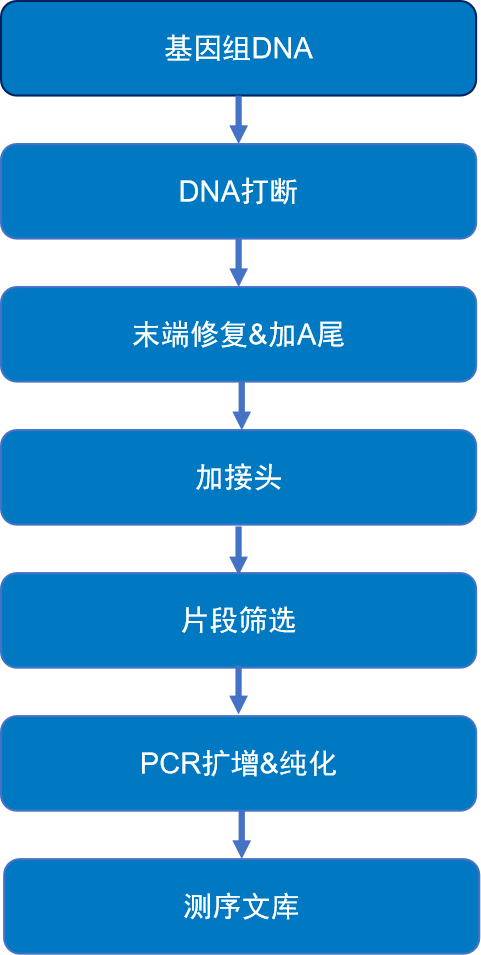
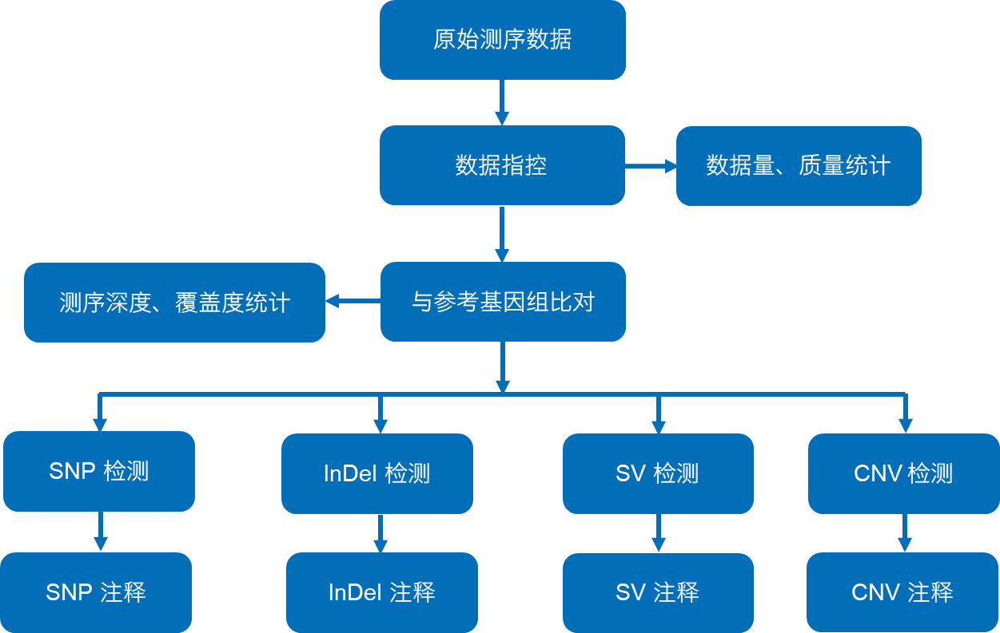

疾病项目分析报告
| 合同编号 | H20XXXXX |
| 合同名称 | TESTXXXXXXXXXX |
| 分期编号 | X202XXXXXX-Z01-F001 |
| 参考基因组及版本 | B37 |
| 报告时间 | 20241028 |
| 售后服务电话 | 400-658-1585 |
| 售后服务邮箱 | service-reseq@novogene.com |
| 温馨提示 | Report仅供展示部分结果，全部分析内容详见Result文件夹； 在您拿到Result前Report中的Result超链接无效，确认结算后，释放结果文件Result中Report的结果目录超链接有效。 |
1 项目简介
1.1 产品概述
全基因组测序（Whole Genome Sequencing, WGS）能够获得整个基因组的测序数据，有效数据覆盖均一，在保证SNV（点突变）、InDel（插入缺失）检出的同时，还适用于CNV（拷贝数变异）、SV（结构变异）、基因-疾病表型关联性分析等的研究。
从DNA提取、文库构建到最终数据获得，每一个环节都可能会对数据质量和数量产生影响，而数据质量又会直接影响后续信息分析的结果。因此，获得高质量数据是保证生物信息分析正确、全面、可信的前提。为了从源头上保证测序数据的准确性、可靠性，我们对每一个生产环节都严格把关，从根本上确保高质量数据的产出。
项目整体流程图如下：
图1 项目流程图
1.2 样本信息
表1 样本信息
| FamilyID | SampleID | NovoID | Type |
|---|---|---|---|
| P1 | tian | FKDO230350531-1A | N |
| P1 | tianshu | FKDO230350529-1A | N |
| P1 | songshu | FKDO230350530-1A | N |
| P1 | tianzi | FKDO230350528-1A | P |
Type: 样本类型 (P: Patient; N:Normal)
2 建库测序流程
2.1 DNA样品检测
详见样本检测报告。
2.2 文库构建及上机测序
基因组DNA利用Covaris破碎仪随机打库检合格后，根据文库的有效浓度及数据产出需求进行MGI DNBSEQ-T7 PE150测序断成长度为350 bp的片段，经末端修复、磷酸化以及加A尾后，片段两端分别连接接头，制备成DNA文库。

图2 建库流程
对文库的检测主要包括2种方法：
（1） AATI检测文库DNA片段的完整性及插入片段大小。
（2） QPCR检测文库有效浓度。
文库检测合格后，按照有效浓度及目标下机数据量的需求将不同文库pooling至一起，将文库5’端磷酸化后进行环化，对环化文库进行滚环扩增，最终形成 DNA 纳米球(DNB)加载至 Flowcell ，使用 DNBSEQ-T7 进行测序。
研究中涉及的方法见中文版methods和英文版methods
| Q1:什么是index标签? |
| A1：二代测序中的序列标签，含6个碱基，用来区分不同的样本 |
| Q2:什么是PE150测序？ |
| A2：PE150测序即Pair end 150 bp，意指高通量双端测序，每端各测 150 bp。双端测序是将每条插入片段的两端进行测序的方法，由于插入片段的长度分布已知，双端测序时不仅可以知道片段两端的序列，也能知道这两段序列之间的长度，从而便于后续比对。 |
3 信息分析流程
获得原始测序序列(Sequenced Reads)后，在有参考序列或参考基因组 (B37)的情况下，进行信息分析流程，大致包括以下三个部分：
- 测序数据质量评估：主要通过对测序错误率、数据量、比对率等进行统计，评估建库测序是否达到了标准，符合标准则进行后续的分析，否则需重新建库或加测。
- 变异检测：将高质量的序列比对到人参考基因组上，检测样本中的变异信息，并对检出的变异进行统计和注释。
- 候选致病突变筛选：主要基于有害性分类、样本情况筛选（显隐性模式筛选、新生突变等），得到最终的候选致病突变。

图3 信息分析流程图
4 分析结果
4.1 标准分析
4.1.1 原始序列数据
高通量测序得到的原始图像数据文件经碱基识别(Base Calling)分析转化为原始测序序列(Sequenced Reads)，我们称之为Raw Data或Raw Reads，结果以FASTQ(简称为fq)文件格式存储，其中包含测序序列(reads)的序列信息以及其对应的测序质量信息。
FASTQ格式文件中每个read由四行描述，如下：
@E100005711L1C002R0040000085/1
TCCCACCACGGGTTCCAACTTCCTTCATGCATTTACTTGACCACAGGCACTGAATTCCGACTGGGTGCAGAGGAGGGCCTTGTTGTGGAGGTAAAAAAAGAGAAATCAAGTCCCAGACCTTGAAGATGGCAGTTTAACACCAATGGAGCC
+
CEEEDE=DEEEEAEEEEEEEBDEEEEEEEDEBEEEEEEEEDEFEEEEEEEEEDEEEEEEEDEEEEEEEECEEEEEEEEEEEEEEEEEEEEEEEEEDEEEEEEEEDDB@E7EEDDEEDEEEECDEDCEEEEEECE6=B*EE7E;%EEDDEE
其中第一行以“@”开头，随后为测序标识符(Sequence Identifiers)和描述文字(选择性部分)；第二行是碱基序列；第三行以“+”开头，随后为测序标识符(选择性部分)；第四行是对应序列的测序质量。
MGI DNBSEQ-T7测序标识符详细信息如下：
| MGI DNBSEQ-T7测序标识符 | 详细信息 |
|---|---|
| E100005711 | Flow cell serial number |
| L1 | Lane Number |
| C002 | X-position (column number) |
| R004 | Y-position (row number) |
| 0000085 | Tile/Field of view |
| /1 | Read Number |
第四行中每个字符对应的ASCII值减去33，即为对应第二行碱基的测序质量值。如果测序错误率用e表示，MGI DNBSEQ-T7 测序平台的碱基质量值用Qphred表示，则有下列关系：
公式一： Qphred = -10log10(e)
测序错误率与测序质量值简明对应关系如下：
| 测序错误率 | 测序质量值 | 对应字符 |
|---|---|---|
| 5% | 13 | . |
| 1% | 20 | 5 |
| 0.1% | 30 | ? |
| 0.01% | 40 | I |
4.1.2 测序数据质量评估
4.1.2.1 测序数据过滤
测序得到的原始测序序列，里面含有带接头的、低质量的reads，会对后续信息分析造成很大干扰。为了保证信息分析质量，必须对raw reads进行精细过滤，得到clean reads，后续分析都基于clean reads。
数据处理的步骤如下：
(1) 去除带接头(adapter)的reads；
(2) 去除N(N表示无法确定碱基信息)的比例大于10%的reads；
(3) 当单端测序read中含有的低质量(低于5)碱基数超过该条read长度比例的 50% 时，需要去除此对paired reads。
关于测序adapter：
P5 adapter：
P5→P7’(5’→3’)
AATGATACGGCGACCACCGAGATCTACAC[i5]ACACTCTTTCCCTACACGACGCTCTTCCGATCT
P7 adapter：
P5→P7’(5’→3’)
GATCGGAAGAGCACACGTCTGAACTCCAGTCAC[i7]ATCTCGTATGCCGTCTTCTGCTTG
图4.1 原始数据过滤结果
- Adapter related：因有接头而过滤掉的Reads对数及其占总Raw reads对数的比例
- Containing N：因单端测序Read中N含量超过该条Read碱基数10%而过滤掉的Reads对数及其占总Raw reads对数的比例
- Low quality：因单端测序Read中低质量（低于5）碱基比例超过Read长度的50%而过滤掉的Reads对数及其占总Raw reads对数的比例
- Clean reads：最终得到的Clean reads对数及其占总Raw reads对数的比例
4.1.2.2 测序错误率分布检查
每个碱基的测序Phred值(Phred score, Qphred)是由测序错误率通过公式一转化得到的，而测序错误率是在碱基识别(Base Calling)过程中通过一种判别发生错误概率的模型计算得到的。对应关系如下表所显示：
碱基识别与Phred分值之间的简明对应关系
| Phred分值 | 不正确的碱基识别 | 碱基正确识别率 | Q-sorce |
|---|---|---|---|
| 10 | 1/10 | 90% | Q10 |
| 20 | 1/100 | 99% | Q20 |
| 30 | 1/1000 | 99.9% | Q30 |
| 40 | 1/10000 | 99.99% | Q40 |
测序错误率分布检查用于检测在测序长度范围内，有无某些位置的碱基存在异常的高错误率，例如如果中间位置的碱基测序错误率显著高于其他位置，则可能存在异常碱基。测序错误率与碱基质量有关，受测序仪本身、测序试剂、样品等多个因素共同影响。对于高通量测序平台，测序错误率分布具有两个特点：
- 测序错误率会随着测序的进行而升高，这是由于测序过程中荧光标记的不完全切割等因素引起荧光信号衰减，因而导致错误率升高
- 每个Read前几个碱基的位置也会有较高的测序错误率，这是由于边合成边测序过程初始阶段，测序仪荧光感光元件对焦速度较慢，获取的荧光图像质量较低，导致碱基识别错误率较高
图4.2 测序错误率分布图
横坐标为Reads的碱基位置，纵坐标为所有Reads该位置碱基的平均错误率，左侧1~150 bp为Read1错误率分布，右侧151~300 bp为Read2错误率分布。
4.1.2.3 测序数据质量分布
测序数据的质量主要分布在Q30（≥85%）以上，这样能够保证后续分析的正常进行。据测序技术的特点，测序片段末端的碱基质量一般会比前端的低。
图4.3 数据质量分布
横坐标为Reads的碱基位置，纵坐标为所有Reads该位置碱基的平均质量值（Phred分值），左侧1~150 bp为Read1数据质量分布，右侧151~300 bp为Read2数据质量分布
4.1.2.4 测序数据质量情况汇总
根据测序平台的测序特点，使用双端测序的数据，我们诺禾致源要求Q20平均比例在90%以上，Q30平均比例在85%以上，平均Error rate在0.1%以下。本次测序样本的平均Rawdata为96.50G，平均有效数据量占比99.26%，平均Q20为97.58%，平均Q30为93.32%，平均错误率为0.03%。综上所述本次测序数据质量良好，满足分析需求。
表4.1 数据产出质量情况一览表
| Sample name | Library | Flowcell/Lane | Raw reads | Raw data(G) | Effective(%) | Error(%) | Q20(%) | Q30(%) | GC(%) |
|---|---|---|---|---|---|---|---|---|---|
| tian | FKDO230350531-1A | AHWN3FDSX5-new_L1 | 31,606,068 | 93.14 | 99.16 | 0.03 | 97.19 | 92.45 | 40.27 |
| tian | FKDO230350531-1A | BHWC2NDSX5-new_L2 | 278,872,927 | 99.21 | 0.03 | 97.44 | 93.00 | 40.37 | |
| tianshu | FKDO230350529-1A | BHWC2NDSX5-new_L1 | 309,579,461 | 92.87 | 99.27 | 0.03 | 97.77 | 93.72 | 40.83 |
| songshu | FKDO230350530-1A | BHWC2NDSX5-new_L1 | 333,681,575 | 100.10 | 99.30 | 0.03 | 97.70 | 93.59 | 40.58 |
| tianzi | FKDO230350528-1A | BHWC2NDSX5-new_L2 | 332,879,560 | 99.86 | 99.25 | 0.03 | 97.42 | 93.02 | 41.02 |
- Sample name：样本名称
- Library：文库名称
- Flowcell/Lane：测序所在测序机器号和Lane号
- Raw reads：统计原始序列双端read pair总数目;根据FASTQ的格式，以四行为一个单位进行统计
- Raw data(G)：统计原始序列数据量
- Effective(%)：过滤后用于后续的生物信息分析的Clean reads占原始数据的比例
- Error(%):所有碱基的平均错误率
- Q20(%)：分别计算 Phred 数值大于20的碱基占总体碱基的百分比
- Q30(%)：分别计算 Phred 数值大于30的碱基占总体碱基的百分比
- GC(%)：计算碱基G和C的数量总和占总的碱基数量的百分比
结果目录：01.Rawdata
4.1.3 参考序列比对分析
有效测序数据通过 BWA (Li H et al.) 比对到参考基因组，得到 BAM格式的最初的比对结果。然后，用Sambamba（Tarasov et al., 2015）对比对结果进行排序；并标记重复reads（mark duplicate reads）。最后，我们利用重复标记后的比对结果进行覆盖度、深度等的统计。通常，人类样本的测序reads能达到95%以上的比对率；当一个位点的碱基覆盖深度（read depth）达到10X以上时，该位点处检测出的SNP比较可信。
4.1.3.1 测序深度、覆盖度分布
|
|
|
图4.4 测序深度 左图为不同测序深度的碱基比例，横坐标表示测序深度，纵坐标表示测序深度为x的碱基在所有碱基中的比例；图像一般在平均深度周围成泊松分布；右图为不同深度上的累积碱基比例，横坐标表示测序深度，纵坐标代表测序深度超过x的碱基在所有碱基中的比例，比如测序深度为0对应了碱基比例100%，表示有100%的碱基其测序深度大于0。 |
图4.5 每个染色体的覆盖深度 (左侧坐标) 和覆盖率 (右侧坐标)
横坐标表示染色体编号，左侧纵坐标表示平均覆盖深度，右侧纵坐标表示覆盖率。 对每条染色体计算覆盖深度时，计算公式为：每条染色体覆盖深度＝每条染色体的测序数据量/每条染色体的总长度。覆盖率＝每条染色体被覆盖的总长度/每条染色体的总长度。
4.1.3.2 覆盖度统计结果
本次所有测序样本的平均比对率为99.87%，目标区域的平均测序深度为32.00X，通过不同深度的占比情况可以看出本次样本测序深度的均一性较好。
表4.2 比对率和覆盖度统计
- Sample：样本名称
- Total：clean data双端总reads数目
- Duplicate：重复的reads数目
- Mapped：比对到参考基因组上的总reads数目 (比例)
- Properly mapped：比对到参考基因组且插入片段大小正确的reads数目 (比例)
- PE mapped：双端reads比对到参考基因组上的reads数目 (比例)
- SE mapped：仅单端read比对到参考基因组上的reads数目 (比例)
- with mate mapped to a different chr：比对到不同染色体的reads数目
- with mate mapped to a different chr (mapQ>=5)：比对到不同染色体且比对质量不低于5的reads数目
- Average_sequencing_depth: 比对到参考基因组的平均测序深度 (测序数据量/基因组大小)
- Coverage: 比对数据对全基因组区域的覆盖度 (碱基覆盖长度占全基因组碱基总长的比例)
- Coverage_at_least_4X: 全基因组区域中碱基覆盖深度不低于4X的比例
- Coverage_at_least_10X：全基因组区域中碱基覆盖深度不低于10X的比例
- Coverage_at_least_20X：全基因组区域中碱基覆盖深度不低于20X的比例
图4.6 各特性reads占总reads数量的比值
结果目录：02.Bam
分析点解读视频：https://magic.novogene.com/customer/main#/video-info-new/e4984c10eede71ed806d6733a68f0102?rId=23
4.1.4 变异检测结果
4.1.4.1 SNP统计结果
SNP是Single Nucleotide Polymorphism的缩写。通常，一个人全基因组内会有约 3.6~4.4 M 个 SNP，绝大数（大于 95%）的高频SNP（群体中等位基因频率大于 5%） 在 dbSNP（Sherry et al., 2001）中有记录，高频SNP一般都不是致病的主要突变位点。
在比对结果的基础上，我们利用bcftools（Li et al., 2009）识别SNP位点，并采用国际惯用的过滤标准对SNP位点进行过滤。本次测序样品中，平均每个样本发现3588794个SNP，其中22218出现在外显子区，1954436个在基因间区，619个在splicing区。在编码区的SNP中，平均每个样本有11324个同义突变，10279个错义突变，80个SNP导致该碱基所在的密码子变为终止密码子，有9个SNP导致该碱基所在的终止密码子变为非终止密码子。SNP统计结果具体如下表所示：
表4.3 基因组和编码区不同区域上SNP的数目
- Sample：样本名称
- CDS：外显子编码区域
- intronic：基因的内含子区域
- UTR3：基因的3'UTR区域
- UTR5：基因的5'UTR区域
- splicing：剪切位点10bp区域
- ncRNA_exonic：非编码RNA外显子区域
- ncRNA_intronic：非编码RNA内含子区域
- ncRNA_UTR3：非编码RNA的3'UTR区域
- ncRNA_UTR5：非编码RNA的5'UTR区域
- ncRNA_splicing：非编码RNA的剪切位点4bp区域
- upstream：转录起始位点上游1Kb区域
- downstream：转录终止位点下游1Kb区域
- intergnic：基因间隔区域
- Total：SNP的总数
synonymous_SNP：同义突变
missense_SNP：错义突变，编码不同的氨基酸，属于非同义突变
stopgain：非同义突变，由于插入、删除或连续碱基替换导致变异位点处产生一个新的终止密码子
stoploss：非同义突变，由于插入、删除或连续碱基替换导致变异位点处的终止密码子丢失
startloss：非同义突变，由于插入、删除或连续碱基替换导致变异位点处的起始密码子丢失
unknown：由于注释用的基因结构注释数据库的错误导致的未知功能位点
图4.7 基因组不同区域上SNP数目 (左) 和编码区上不同类型的SNP数目 (右) 分布
转换/颠换的比值（Ts:Tv）可以反应SNP数据集的准确性，全基因组内碱基转换与碱基颠换的比率在2.2左右。本次测序样本中，平均每个样本有2051668个杂合基因型，1537125个纯合基因型，23394个新SNP，新SNP所占的平均比例为0.01%。
表4.4 基因组上SNP的特征
- Sample：样品名称
- Total：SNP总数
- Het(heterozygote)：杂合子基因型
- Hom(homozygote)：纯合子基因型
- transition (ts) ：碱基转换
- transversion (tv) ：碱基颠换
- ts/tv：转换和颠换比值
- dbSNP percentage：dbSNP中的比例
- novel：未被dbSNP注释的新SNP
- novel ts：新的 (未被dbSNP注释) 碱基转换
- novel tv：新的 (未被dbSNP注释) 碱基颠换
- novel ts/tv：新的转换和颠换比值
图4.8 基因组SNP特征
4.1.4.2 SNP注释结果
利用ANNOVAR（Wang et al., 2010）软件对SNP进行注释，其中包括dbSNP数据库（Sherry et al., 2001）、千人基因组计划（Abecasis et al., 2012）和其他已有的数据库的注释信息，注释内容涵盖变异的位置信息、类型、保守型预测等。具体的注释内容展示如表4.5。
表4.5 SNP注释结果展示（只显示前1行）
| Priority1 | CHROM2 | POS3 | ID4 | REF5 | ALT6 | QUAL7 | FILTER8 | GeneName9 | Description10 | Func11 | Gene12 | GeneDetail13 | ExonicFunc14 | AAChange15 | Gencode16 | cpgIslandExt17 | cytoBand18 | wgRna19 | targetScanS20 | tfbsConsSites21 | genomicSuperDups22 | Repeat23 | avsnp24 | CLNALLELEID25 | CLNDN26 | CLNDISDB27 | CLNREVSTAT28 | CLNSIG29 | cosmic30 | gwasCatalog31 | 1000g_Chinese32 | 1000g_EAS33 | 1000g_ALL34 | esp6500siv2_all35 | GnomAD_exome_AF_ALL36 | GnomAD_exome_AF_ALL_eas37 | GnomAD_genome_AF38 | GnomAD_genome_AF_eas39 | ExAC_ALL40 | ExAC_EAS41 | dbscSNV_ADA_SCORE42 | dbscSNV_RF_SCORE43 | spidex44 | Interpro_domain45 | SIFT46 | Polyphen2_HDIV47 | Polyphen2_HVAR48 | LRT49 | MutationTaster50 | MutationAssessor51 | FATHMM52 | phyloP100way_vertebrate53 | phyloP30way_mammalian54 | SiPhy_29way_logOdds55 | CADD56 | gerp++gt257 | MCAP58 | REVEL59 | INFO60 | FORMAT61 | tian62 | Ori_REF63 | Ori_ALT64 | shared_hom65 | shared_het66 | OMIM67 | GWAS_Pubmed_pValue68 | HGMD_Disease_ID69 | HGMD_Mutation_URL70 | PubMedID71 | GO_BP72 | GO_CC73 | GO_MF74 | KEGG_PATHWAY75 | PID_PATHWAY76 | BIOCARTA_PATHWAY77 | REACTOME_PATHWAY78 | Expression_summary79 | RNA tissue specificity80 | RNA tissue distribution81 | Subcellular_Location82 | RNA tissue specific nTPM83 |
|---|---|---|---|---|---|---|---|---|---|---|---|---|---|---|---|---|---|---|---|---|---|---|---|---|---|---|---|---|---|---|---|---|---|---|---|---|---|---|---|---|---|---|---|---|---|---|---|---|---|---|---|---|---|---|---|---|---|---|---|---|---|---|---|---|---|---|---|---|---|---|---|---|---|---|---|---|---|---|---|---|---|---|
| L | 1 | 10450 | . | T | C | 65.0133 | PASS | . | . | intergenic | NONE,NR_148357 | dist=NONE;dist=1419 | . | . | . | . | 1p36.33 | . | . | . | Score=0.991956;Name=chr15:102446355 | Score=1504;Name="1:(CCCTAA)n(Simple_repeat)" | . | . | . | . | . | . | . | . | . | . | . | . | . | . | 0.0056 | 0.0024 | . | . | . | . | . | . | . | . | . | . | . | . | . | . | . | . | . | . | . | . | DP=17;VDB=0.115226;SGB=-0.636426;RPBZ=0.318256;MQBZ=-2.18935;MQSBZ=0.106798;BQBZ=-1.94009;NMBZ=0.705361;SCBZ=0;FS=0;MQ0F=0;AC=1;AN=2;DP4=5,4,2,5;MQ=41 | GT:PL:DP:SP:AD | 0/1:98,0,197:16:4:9,6 | T | C | 0 | 1 | . | . | . | . | . | . | . | . | . | . | . | . | . | Not detected | Not detected | . | . |
注：注释内容包括7个部分，分别为优先级信息（1)，基因及区域注释（2-23)，数据库（频率)注释（24-41)，保守（有害)性预测（42-59)，变异位点信息（60-66)，基因功能及通路注释（67-78), 基因的组织特异性表达情况的注释（79-83)。
（1）优先级，H:High，表示该位点不在genome repeat 区域（即genomicSuperDups和Repeat 没有注释信息)，千人基因组数据库中频率小于0.01，该位点位于exonic 或者 splicing 区域，且该位点经SIFT、Polyphen（Adzhubei et al., 2013）、MutationTaster、CADD预测至少有一个软件预测为有害；M:Medium，表示该位点不在genome repeat 区域（即genomicSuperDups和Repeat 没有注释信息)，千人基因组数据库中频率小于0.01，该位点位于exonic 或者 splicing 区域；L:Low，表示该位点不满足H或M条件的其他所有的突变。国际小鼠表型分析联盟（International Mouse Phenotyping Consortium ，IMPC)对小鼠进行大规模基因敲除，并进行表型分析。优先级（H、M、L)后面的符号（*、+、-)表示 *：在小鼠大规模基因敲除表型分析中，基因为lethal基因（完全致死基因）+：在小鼠大规模基因敲除表型分析中，基因为subviable基因（可能致死基因：＜12.5%的胚胎存活率）-：在小鼠大规模基因敲除表型分析中，基因为vialbe（可存活基因)
第2-23项为基因及区域注释信息———变异位点所处的基因（对应的氨基酸)可能直接与疾病相关。对变异位点进行已知基因结构及所处区域注释，有助于老师了解此变异位点对应的基因结构及所处区域信息。
（2）染色体
（3）变异位点在染色体上的绝对位置
（4）dbSNP注释ID
（5）参考基因组碱基型
（6）样本基因组碱基型
（7）变异的质量值，值越高越好。文献中常见以变异的质量值大于20为过滤标准
（8）过滤TAG，如果该位点满足所有过滤条件，则标记为PASS（采用国际惯用的过滤标准)
（9）基因名称注释，列出该变异所在的基因
（10） 变异位点所在基因的描述
（11）对变异位点所在的区域进行注释（exonic, splicing, UTR5, UTR3, intronic, ncRNA_exonic, ncRNA_intronic, ncRNA_UTR3, ncRNA_UTR5, ncRNA _splicing, upstream, downstream, intergenic)。说明1、exonic应该包括coding exonic portion、UTR3和UTR5，但ANNOVAR注释结果中exonic只代表coding exonic portion。2、当一个变异位点位于多个基因或转录本，且功能不同，这些功能按照优先级排序，该列输出优先级最高的功能类型Exonic = splicing > ncRNA > UTR5/UTR3 > intron > upstream/downstream > intergenic。 当一个变异既位于一个基因的UTR3，又位于另一个基因的UTR5时，该列输出"UTR5,UTR3"。当一个变异既位于一个基因的downstream，又位于另一个基因的upstream时，该列输出"upstream,downstream "
（12）列出该变异位点相关的转录本（只有功能符合Func列的转录本才列出)。如果Func列为intergenic，此处列出两侧的基因名
（13）描述UTR、splicing、ncRNA_splicing、intergenic、upstream或downstream区域的变异情况。当Func列的值为exonic; splicing或者splicing时,该列会给出该位点对于转录本splicing的影响，例如： NM_172210:exon6:c.1090+5C>A, NM_172210是转录本; exon6:c.1090+5C>A是序列改变，表示C>A 发生在第6个外显子下游的第5个碱基(1090是cDNA第6个外显子的结束位置)；当Func列的值为intergenic时，该列格式为dist=1366;dist=22344，表示该变异位点距离两侧基因的距离；当Func列的值为UTR*时，该列给出UTR中的序列变化，例如NM_198576:c. *19C>T表示着C>T位于NM_198576上终止密码子下游的第19个碱基上；当Func列的值为upstream或downstream时，该列给出该变异位点距离下游或上游基因的距离
（14）外显子区的SNV 或 InDel变异类型（SNV的变异类型包括synonymous_SNV, missense_SNV, stopgain, stopgloss和unknown；InDel的变异类型包括frameshift insertion, frameshift deletion, stopgain, stoploss, nonframeshift insertion, nonframeshift deletion和unknown)
（15）氨基酸改变，只有当Func列为exonic或exonic;splicing时，该列才有结果。按照每个转录本进行注释（例如，AIM1L:NM_001039775:exon2:c.C2768T:p.P923L，其中，AIM1L表示该变异所在的基因名称，NM_001039775表示该变异所在的转录本ID，exon2表示该变异位于转录本的第二个外显子上，c.C2768T表示该变异引起CDS在第2768位上由C突变为T，p.P923L表示该变异引起蛋白序列在第923位上的氨基酸由Pro变为Leu)
（16）Gencode注释的基因名称
（17）CpG岛预测结果，注释结果为CpG岛名称，如CpG: 116（116是该CpG岛中CG二核苷酸的数目)
（18）该变异位点所处的染色体区段（利用Giemas染色观察得到的)。如果变异位点跨过多个区段，用短横线连接
（19）基于miRBase和snoRNABase，对变异位点相关的microRNA和snoRNA进行注释，给出microRNA和snoRNA的基因名称
（20）UCSC（Kent et al., 2002）提供TargetScanS注释数据库，库中包含在3’UTR中保守的microRNA结合位点，来源于TargetScanHuman 5.1的预测结果；该软件预测microRNA的靶点，预测结果依据microRNA与靶点之间结合的效能进行排序，排名越靠前，说明microRNA与其靶点的结合越可能是实际存在的事件。此项给出microRNA靶点的信息，一是score，是该靶点的分值，反映的是结合效能的排名，因此，score越大，说明排名越靠后，实际发生该结合的可能性越小，作者没有推荐阈值；二是Name，是作用于该靶点的microRNA名称。例如，Score=62;Name=KRAS:miR-181:1，表示该靶点的分值是62，其位于KRAS基因的3’UTR中，受到该变异位点影响的microRNA是miR-181:1。表示该变异位点位于microRNA（miR-181:1)在基因KRAS的3’UTR上的结合位点
（21）基于transfac矩阵数据库（v7.0)，计算所有转录因子结合位点在人/小鼠/大鼠比对中的保守分值，当结合位点的分值达到阈值时，认为该位点在人/小鼠/大鼠中保守。该列给出的是该变异位点所在的保守转录因子结合位点的位置和分值，即Name和Score。Name是结合位点处的motif名称，这些motif能够被转录因子识别，例如V$CDPCR3_01，利用一些在线服务器（如MSigDB)能够查询这个motif能够被哪些转录因子识别；Score是该结合位点的保守分值
（22）检测该变异位点是否位于重复片段（segmental duplication)中。重复区域中检测到的遗传变异大多数是由于序列比对错误造成的，所以被注释到segmental duplications的变异需要谨慎对待，很可能是假阳性位点。给出两个值，一是Name，表示基因组中与该变异位点所在区域相似的片段的位置；二是Score，表示两个相似片段的序列一致性。例如，Score=0.994828;Name=chr19:60000，表示chr19:60000所在片段跟该变异位点所在片段相似，序列一致性为0.994828,，范围0~1
（23）重复序列注释信息，重复序列来源于RepeatMasker注释。例如， Score=180;Name="1385:（CACCC)n（Simple_repeat)"。Score表示该repeat的分值；Name由两部分构成，一部分（CACCC)n是repeat的名称，另一部分Simple是repeat的类别。只要有注释信息，就表明该变异位于散在重复序列或低复杂度序列中；这些区域容易出现比对错误，所以该区域的变异位点可靠性不高
第24-41项为数据库（频率)注释————人群中有很多变异位点是多态性的（高频的)，而真正有害的变异位点一般是低频的。对每个变异位点注释国际通用的部分数据库中的频率，有助于了解这个变异位点发生的频率高低的信息，协助找出致病突变位点。
（24）该变异在dbSNP中的ID
（25）注释变异与人类健康之间的关系，临床意义的数据来源于NCBI。ClinVar等位基因ID
（26）ClinVar对CLNDISDB中疾病标识符指定的概念的首选疾病名称
（27）疾病数据库名称和标识符的一对标签值，如OMIM: NNNNNN
（28）变异ID的ClinVar审查状态
（29）该单变异的临床意义,可取值为unknown, untested, non-pathogenic, probable-non-pathogenic, probable-pathogenic, pathogenic, drug-response, histocompatibility, other等
（30）cosmic肿瘤相关变异数据库的注释
（31）检测变异位点是否在以往的GWAS研究中被报导，表示该变异位点与哪些疾病相关联，"."表示没有GWAS报导
（32）给出千人基因组计划数据的中国人群中，该变异位点上突变碱基的等位基因频率
（33）给出千人基因组计划数据的东亚人群中，该变异位点上突变碱基的等位基因频率
（34）给出千人基因组计划数据的所有人群中，该变异位点上突变碱基的等位基因频率，文献通常采用0.01的标准进行过滤
（35）国家心肺和血液研究所外显子组测序计划（NHLBI-ESP project，esp6500si_all数据库中包含SNP变异、InDel变异和Y染色体上的变异的所有个体中，突变碱基的等位基因频率（alternative allele frequency)，文献通常采用0.01的标准进行过滤
（36）GnomAD是The Genome Aggregation Database的简称，GnomAD_exome涵盖了来自不相关个体的125,748个外显子序列，作为各种疾病特异性和群体遗传研究的一部分进行测序。GnomAD_exome_AF_ALL指在所有人群中，该变异位点上突变碱基的等位基因频率，考虑到发病率和外显率数据对125,748个外显子人群数据进行了修正，更好地适用于频率过滤
（37）GnomAD是The Genome Aggregation Database的简称，GnomAD_exome涵盖了来自不相关个体的125,748个外显子序列，作为各种疾病特异性和群体遗传研究的一部分进行测序。GnomAD_exome_AF_eas指在所有亚洲人群中，该变异位点上突变碱基的等位基因频率
（38）GnomAD是The Genome Aggregation Database的简称，GnomAD_genome涵盖了来自不相关个体的15,708个全基因组序列，作为各种疾病特异性和群体遗传研究的一部分进行测序。GnomAD_genome_AF_ALL指在所有亚洲人群中，该变异位点上突变碱基的等位基因频率,虑到发病率和外显率数据对15,708个全基因组人群数据进行了修正，更好地适用于频率过滤
（39）GnomAD是The Genome Aggregation Database的简称，GnomAD_genome涵盖了来自不相关个体的15,708个全基因组序列，作为各种疾病特异性和群体遗传研究的一部分进行测序。GnomAD_genome_AF_eas指在所有亚洲人群中，该变异位点上突变碱基的等位基因基因的数目
（40）ExAC是Exome Aggregation Consortium的简称，整合了60706个无关个体的数据，这些个体来源于大量disease-specific研究和群体遗传学研究，能够用做严重疾病研究的reference set of allele frequency。目前ExAC数据库中包括ALL, AFR （African), AMR （Admixed American), EAS （East Asian), FIN （Finnish), NFE （Non-finnish European), OTH （other), SAS （South Asian)。ExAC_ALL是指在所有人群中，该变异位点上突变碱基的等位基因频率
（41）在ExAC的东亚人群中，该变异位点上突变碱基的等位基因频率
第42-59项为保守（有害)性注释————个体中的突变往往非常多（全基因组范围内能达到3.6M-4.4M)，而真正有害的突变却是罕见的，有很多根据变异位点的保守性等信息进行有害性预测的软件能帮助我们进行突变位点的有害性评估。本公司采用国际惯用的变异有害性预测软件对突变位点的有害性进行预测，协助找出真正有害的突变位点。
（42）基于adaptive boosting预测突变是否影响splicing的注释数据库。dbscSNV基于多种预测突变是否影响splicing的软件，通过Ada和RF两种机器学习方法得到两个综合的预测分值。建议使用0.6作为判定阈值，即dbscSNV_ADA_SCORE和dbscSNV_RF_SCORE这两个分值中至少一个大于0.6，认为突变可能影响剪接
（43）基于Random Forest预测突变是否影响splicing的注释数据库。dbscSNV基于多种预测突变是否影响splicing的软件，通过Ada和RF两种机器学习方法得到两个综合的预测分值。建议使用0.6作为判定阈值，即dbscSNV_ADA_SCORE和dbscSNV_RF_SCORE这两个分值中至少一个大于0.6，认为突变可能影响剪接
（44）一种机器学习方法用来预测基因突变如何影响RNA剪接，一般认为分值大于4小于-4影响拼接
（45）Interpro数据库注释的突变位点所在蛋白质的结构域
（46）SIFT分值（dbNSFP)，表示该变异对蛋白序列的影响。逗号前后分别是SIFT_score和SIFT_predSIFT_score是SIFT分值，分值越小越可能“有害”，表明该SNP导致蛋白结构或功能改变的可能性大。SIFT_pred是预测结果，取值为T或者D。当该变异同时影响多个蛋白序列时，对每条蛋白序列有一个SIFT值，取最小值。D: Deleterious （sift<=0.05); T: Tolerated （sift>0.05))
（47）利用PolyPhen2基于HumanVar数据库预测该变异对蛋白序列的影响，用于单基因遗传病（dbNSFP)。该列包含两个值，第一个是PolyPhen 2分值，数值越大越“有害”，表明该SNP导致蛋白结构或功能改变的可能性大；第二个是D或P或B（D: Probably damaging （>=0.909), P: Possibly damaging （0.447<=pp2_hvar<=0.909); B: Benign （pp2_hvar<=0.446))
（48）利用PolyPhen2基于HumanDiv数据库预测该变异对蛋白序列的影响，用于复杂疾病（dbNSFP)。逗号前后分别是Polyphen2_HDIV_score和Polyphen2_HDIV_predPolyphen2_HDIV_score是PolyPhen 2分值，数值越大越可能“有害”，表明该SNP导致蛋白结构或功能改变的可能性大；Polyphen2_HDIV_pred是预测结果，取值为D或P或B（D: Probably damaging （>=0.957), P: Possibly damaging （0.453<=pp2_hdiv<=0.956); B: Benign （pp2_hdiv<=0.452))
（49）LRT预测结果（dbNSFP)，表示该变异对蛋白序列的影响。逗号前后分别是LRT_score和LRT_predLRT_score是LRT分值，分值越小越可能“有害”，表明该SNP导致蛋白结构或功能改变的可能性大。LRT_pred是预测结果，取值为D、N或者U（D: Deleterious; N: Neutral; U: Unknown)
（50）MutationTaster预测结果（dbNSFP)，表示该变异对蛋白序列的影响。逗号前后分别是MutationTaster_score和MutationTaster_predMutationTaster_score是MutationTaster分值，取值为0-1，分值越大，表示预测结果越可靠。MutationTaster_pred是预测结果，取值为A、D、N或者P。"A" （"Disease_causing_automatic"); "D" （"Disease_causing"); "N" （"Polymorphism"); "P" （"Polymorphism_automatic")。A和D都表示位点可能有害。
（51）MutationAssessor预测结果（dbNSFP)，表示该变异对蛋白序列的影响。逗号前后分别是MutationAssessor_score和MutationAssessor_predMutationAssessor_score是MutationAssessor初始分值，越大越可能“有害”，表明该SNP导致蛋白结构或功能改变的可能性大。MutationAssessor_pred是H、M、L或N（H: High; M: Medium; L: Low; N: Neutral.)。H和M表示功能性的，L和N表示non-functional
（52）FATHMM预测结果（dbNSFP)，表示该变异对蛋白序列的影响。逗号前后分别是FATHMM_score和FATHMM_predFATHMM_score是FATHMM初始分值，分值小于-1.5认为是Deleterious，分值越小越可能有害，表明该SNP导致蛋白结构或功能改变的可能性大。FATHMM_pred是D或T（D: Deleterious; T: Tolerated)
（53）基于100只脊椎动物全基因组比对的phylop100way_vertebratephylop评分(dbNSFP)。一般来说，分数越高，位点越保守
（54）基于30种哺乳动物全基因组比对的PhyloP评分(dbNSFP)
（55）基于29个哺乳动物基因组全基因组比对的SiPhy评分 (dbNSFP)。分数越大，表明该位点越保守
（56）CADD是一种对SNV和InDel的有害性进行打分的工具。它整合多种信息来注释变异位点的功能；不仅预测编码区变异（包括同义突变和非同义突变)的功能影响，还预测非编码区变异的功能影响。我们的注释结果中，有分值时，逗号前后分别是CADD和CADD_Phred；CADD列是初始分值，CADD_Phred是转换后的分值；CADD_Phred分值中，10表示score排名在前10%，20表示前1%，30表示前0.1%. 对于InDel，对全部有CADD分值的InDel给出分值，'.'表示没有CADD分值。对于SNP，仅对CADD分值排名在前10%的SNP给出分值，'.'表示CADD分值排名不在前10%。CADD作者建议SNP的有害性阈值为CADD_Phred分值>15，文章中通常用10或15；InDel没有建议值。
（57）dbNSFP中的GERP++只包含coding variant的注释。为了注释所有变异位点的保守性，ANNOVAR整理了gerp++gt2，包含GERP++ 分值大于2的位点。越保守的位点发生变异，对于蛋白的影响越大。分值越高，位点越保守。通常，GERP++ 分值大于2的位点认为是保守位点，可能具有功能
（58）是一种致病性似然分数，即孟德尔临床应用致病性（Mendelian Clinically Applicable Pathogenicity，MCAP)分数。MCAP用于分类的变量是基于现有致病性似然值结合对进化保守性和跨物种推断人类种群内频率的直接评估，MCAP作者建议的阈值分值大于0.025
（59）是一种整合了多种软件预测分值，预测罕见错义突变致病性的方法。REVEL的分值范围为0-1，分值越大越有害，文献中作者取值分值为0.5时对应检测有害性突变的敏感性为0.754，特异性为0.891
第60-66项为变异位点信息注释————此部分信息为变异位点的详细信息，包括变异位点的覆盖深度，突变前后碱基型和纯杂合信息等。变异位点的信息能在家系分析或者筛选中起到重要的作用。
（60）变异软件检测的变异位点信息
（61）用“”分隔了若干个字段
GT：该位点基因型（Genotype），表示为由/或|分隔的等位基因值。参考等位基因(在Ori_REF字段中)的等位基因值为0，在Ori_ALT中列出的第一个等位基因为1，在Ori_ALT中列出的第二个等位基因为2，以此类推。0/0和1/1代表纯合子。0/1为杂合子。‘.’表示未检测到该位点基因型
AD：列出的ref和alt等位基因的等位基因深度
DP：该位点大致的测序深度（MQ=255或错配碱基被过滤掉）
GQ：基因型质量PL：标准化基因型似然值（逗号分隔的三个值，依次对应0/0、0/1、1/1三种基因型，值越小越好)
PL：标准化基因型似然值（逗号分隔的三个值，依次对应0/0、0/1、1/1三种基因型，值越小越好)
（62）与FORMAT列对应，‘’分隔的每一部分对应FORMAT‘’分隔的每一部分
（63）该位点在VCF文件中REF列的值。对于InDel，VCF文件中REF的值可能跟本文件REF列的值不一致，因为使用ANNOVAR注释时，用bcftools norm对InDel位点进行了left-normalization，导致InDel注释结果文件中的REF和ALT比VCF文件中的REF、ALT短
（64）该位点在VCF文件中ALT列的值，即该位点所有的突变碱基型。每个样本的GT中0、1、2、…等编号是依据Ori_REF和Ori_ALT这两列进行编号的，0表示跟Ori_REF相同，1表示Ori_ALT的第一种突变碱基型。本文件ALT列的值对应Ori_ALT列中的一个，但可能不一致，因为使用ANNOVAR注释时，用bcftools norm对InDel位点进行了left-normalization，导致InDel的ALT列的值比其在VCF文件中对应的ALT短
（65）在当前位点处发生纯合突变的样本数目
（66）在当前位点处发生杂合突变的样本数目
第67-78项为基因功能及通路注释————对突变位点所在基因进行疾病相关数据库，通路及功能相关注释，能了解到该突变位点是否已知与某类型疾病相关，也能了解到该突变位点所在基因存在于哪些通路中，对了解该基因的生物学功能有重要意义
（67）人类孟德尔遗传病数据库注释（Hamosh et al., 2005），给出与变异位点所在基因相关的遗传疾病名称
（68）该变异位点在以往的GWAS研究中，被哪篇文章报导与疾病相关联，并给出该位点在文章中的p-value。格式为分号分隔的pubmedID（p-value)
（69） 人类基因突变数据库注释，给出该变异位点相关的疾病名称和在HGMD数据库中的ID。格式为Disease_name（HGMD中的ID号)
（70） 给出该变异位点在人类基因突变数据库（HGMD)中收录的文献报道中的突变形式以及参考文献网址（注意注释的是这个位点的突变，没有完全按照一样的参考碱基型和突变碱基型注释，比如一个位点发生了SNP突变，但按照发生在这个位点的突变注释，可能注释上的为InDel突变)。以“|”分隔的几部分分别表示突变的密码子，氨基酸，CDS等信息。例如gCGC-TGC|Arg27Cys|c.79C>T|p.R27C 表示CGC 密码子第一个C突变成了T，第27位氨基酸由精氨酸变成半胱氨酸（p.R27C表示同样意思)，突变在CDS上第79位由C变成T。由于突变是密码子第一个碱基，在其左侧的碱基“G”也以小写字母体现。另外还有如IVS1 ds G-A +37|c.154+37G>A， IVS 表示内含子编号，“+” 表示下游，“-” 表示上游，"as" 表示 acceptor splice site，"ds" 表示 donor splice site；对于indel突变，如 TGCCCCC^408CCCccATGAATGGTC|c.1223_1224dupCC，突变本身以小写碱基表示，且会在两侧加上各10bp flanking碱基，以^开头的数字表示密码子的个数。突变的命名规则详情可参见HGVS（HUMAN GENOME VARIATION SOCIETY)
（71）给出与该突变位点或基因相关的PubMed文献编号，来源于HGMD和OMIM数据库，通过在Pubmed中输入编号可检索到编号对应的文献，PubMed编号以|分隔。在HGMD中有突变时（即HGMD_Disease_ID 列不为'.')，第一个PubMed编号一般为HGMD数据库中突变点所对应的参考文献编号，其他的参考文献按照发表时间排列，编号顺序越靠前表示越是最近发表的，因此同一个基因的第一个PubMed编号可能不同，这是因为HGMD对应的参考文献是对应到位点的，而同一基因在HGMD中的不同突变位点的参考文献并没有合并到一起，以便于区分同一基因已知不同突变位点的参考文献编号
（72-74） Gene Ontology数据库注释（Harris et al., 2004），GO是基因本体学注释，包括了基因的生物学过程（Biological Process，BP)，细胞组分（Cellular Component，CC)和分子功能（Molecular Function，MF)的注释。给出变异位点所在蛋白质或者基因参与的生物学通路名称
（75）全基因组及代谢途径数据库注释（Kanehisa et al., 2000），给出变异位点所在基因参与的代谢通路名称
（76）通路相互作用数据库注释，给出与变异位点所在蛋白相互作用的通路名称
（77）BIOCARTA数据库注释，给出变异位点所在基因参与的分子通路名称
（78）人类生物学反应及信号通路数据库注释，给出变异位点所在基因参与的信号通路名称
第79-83项为基因的组织特异性表达情况的注释————本部分展示Human Protein Atlas（HPA)数据库（Uhlén M, et al. Science, 2015)中记录的可编码蛋白的基因在正常人类的44个组织的蛋白表达情况和32个组织的RNA转录水平的检测结果，及HPA网站的相应可视化结果链接
（79）蛋白表达情况的概述，综合免疫组化结果、RNA结果、和亚细胞分布结果，描述基因在不同组织的表达分布情况和在亚细胞层面的表达分布情况
（80）RNA组织表达情况概述，分为：(1) Tissue enriched：与任何其他组织相比，特定组织中的mRNA水平至少高出四倍 (2) Group enriched：与其他组织相比，组内的2-5种组织的平均mRNA水平至少高出4倍 (3) Tissue enhanced：与所有其他组织的平均水平相比，特定组织中的mRNA水平至少高出四倍 (4) Low tissue specificity：在各个组织中表达量低
（81）组织中基因表达的可视化。所有表达量升高的基因被分类为：(1) Detected in single：在单个组织中检测 (2) Detected in some：多于一种但少于三分之一的组织中检测到 (3) Detected in many：在至少三分之一但不是全部组织中发现 (4) Detected in all：所有组织均检测到
（82）基因的亚细胞分布位置，如“nucleus”,“ mitochondria”等
（83）基于HPA和GTEx的转录组学数据，总结了50个组织中每个基因的一致转录表达水平。“nTPM”（consensus normalized expression）值取两个数据源中每个基因的最大nTPM值。若“RNA tissue specificity”列为“Low tissue specificity”，此栏为空
| Q1：SNP质量值(MQ)是什么？ |
| A1：Root-mean-square mapping quality of covering reads，reads比对到参考基因组，每个碱基均有一个比对错误率，如果比对错误率是0.001，那MQ=-10lg0.001=30。 |
| Q2：SNP质量值(QUAL)是什么？ |
| A2：Phred 格式(Phred_scaled)的质量值，表示该位点存在variant的可能性；该值越高，则variant的可能性越大；计算方法为，Phred值 = -10 * log (1-p)， p为variant存在的概率; 通过计算公式可以得出值是20的位点为variant的概率达到99%。 |
结果目录：03.Result_X202XXXXXX-Z01-F001_disease/result/Mutation/SNP
4.1.4.3 InDel统计结果
编码区或剪接位点处发生的插入缺失都可能会改变蛋白的翻译。移码变异，其插入或缺失的碱基串的长度为3的非整数倍，因此可能导致整个读框的改变；移码变异与非移码变异相比较，前者对基因功能的影响更大，同时在群体中受到更大的筛选压力。InDel长度分布如下图所示：
图4.9 InDel长度分布
横坐标代表InDel的长度（+为插入，-为缺失），纵坐标代表长度为x的InDel在所有InDel中的数目。
在比对结果的基础上，我们利用bcftools(Li et al., 2009)识别InDel，并采用国际惯用的过滤标准对InDel结果进行过滤。本次测序样品中，平均每个样本发现1020373个InDel，其中598出现在外显子区，520298个在基因间区，401个在splicing区。在编码区的InDel中，平均每个样本有63个移码缺失，57个移码插入，196个非移码缺失，167个非移码插入，1个InDel导致丢失终止密码子，9个InDel导致获得终止密码子。InDel结果统计如下：
表4.6 基因组和编码区上不同类型InDel的数目
- Sample：样本名称
- CDS：外显子编码区域
- intronic：基因的内含子区域
- UTR3：基因的3'UTR区域
- UTR5：基因的5'UTR区域
- splicing：剪切位点10bp区域
- ncRNA_exonic：非编码RNA外显子区域
- ncRNA_intronic：非编码RNA内含子区域
- ncRNA_UTR3：非编码RNA的3'UTR区域
- ncRNA_UTR5：非编码RNA的5'UTR区域
- ncRNA_splicing：非编码RNA的剪切位点4bp区域
- upstream：转录起始位点上游1Kb区域
- downstream：转录终止位点下游1Kb区域
- intergnic：基因间隔区域
- Total：InDel的总数
frameshift_deletion：移码缺失，导致编码蛋白的读框改变的删除；该删除的长度为非3的整数倍
frameshift_insertion：移码插入，导致编码蛋白的读框改变的插入；该插入的长度为非3的整数倍
nonframeshift_deletion：非移码缺失，不改变编码蛋白的读框的删除；该删除的长度为3的整数倍
nonframeshift_insertion：非移码插入，不改变编码蛋白的读框的插入；该插入的长度为3的整数倍
stopgain：非同义突变，由于插入、删除或连续碱基替换导致变异位点处产生一个新的终止密码子
stoploss：非同义突变，由于插入、删除或连续碱基替换导致变异位点处的终止密码子丢失
startloss：非同义突变，由于插入、删除或连续碱基替换导致变异位点处的起始密码子丢失
unknown：由于注释用的基因结构注释数据库的错误导致的未知功能位点
图4.10 基因组不同区域上InDel数目 (左) 和编码区上不同类型的InDel数目 (右) 分布
- 左图中，frameshift deletion：移码缺失，即导致编码蛋白的读框发生改变的删除；该删除的长度不是3的整数倍。Frameshift insertion：移码插入，即导致编码蛋白的读框发生改变的插入；该插入的长度不是3的整数倍。nonframeshift deletion：非移码缺失，即不改变编码蛋白的读框的删除；该删除的长度为3的整数倍。nonframeshift insertion：非移码插入，即不改变编码蛋白的读框的插入；该插入的长度为3的整数倍。stopgain：导致获得终止密码子的InDel。stoploss：导致丢失终止密码子的InDel。unknown代表由于注释用的基因结构注释数据库的不完善导致的未知功能位点。
- 右图中，downstream代表转录终止位点下游1Kb区域内的InDel数目；exonic代表外显子区域内的InDel数目；intergenic代表基因间区域内的InDel数目；intronic代表内含子区域内的InDel数目；ncRNA_exonic代表非编码RNA外显子区域内的InDel数目；ncRNA_intronic代表非编码RNA内含子区域内的InDel数目；ncRNA_splicing代表非编码RNA的splicing junction 10bp区域内的InDel数目；ncRNA_UTR3代表非编码RNA 3’UTR区域内的InDel数目；ncRNA_UTR5代表非编码RNA 5’UTR区域内的InDel数目；spling代表splicing junction 10bp区域内的InDel数目；upstream代表转录起始位点上游1Kb区域内的InDel数目；UTR3代表3’UTR区域内的InDel数目；UTR5代表5’UTR区域的InDel数目。
本次测序样本中，每个样本平均有782224个杂合基因型，238148个纯合基因型，有208758个新InDel，新InDel所占的平均比例为20.455%。
表4.7 基因组上InDel的特征
- Sample：样品名称
- Total：InDel总数
- Het(heterozygote)：杂合基因型的InDel数目
- Hom(homozygote)：纯合基因型的InDel数目
- dbSNP percentage:被dbSNP注释的InDel数目
- novel：未被dbSNP注释的新InDel数目
- novel_proportion：新InDel所占的比例
图4.11 基因组InDel特征
4.1.4.4 InDel注释结果
利用ANNOVAR(Wang et al.,2010)软件对InDel位点进行注释，其中包括dbSNP数据库、千人基因组计划和其他已有的数据库的注释信息，注释内容涵盖变异的位置信息、类型、保守型预测等。具体的注释内容展示如表4.8。
表4.8 InDel注释结果展示（只显示前1行）
| Priority1 | CHROM2 | POS3 | ID4 | REF5 | ALT6 | QUAL7 | FILTER8 | GeneName9 | Description10 | Func11 | Gene12 | GeneDetail13 | ExonicFunc14 | AAChange15 | Gencode16 | cpgIslandExt17 | cytoBand18 | wgRna19 | targetScanS20 | tfbsConsSites21 | genomicSuperDups22 | Repeat23 | avsnp24 | CLNALLELEID25 | CLNDN26 | CLNDISDB27 | CLNREVSTAT28 | CLNSIG29 | cosmic30 | gwasCatalog31 | 1000g_Chinese32 | 1000g_EAS33 | 1000g_ALL34 | esp6500siv2_all35 | GnomAD_exome_AF_ALL36 | GnomAD_exome_AF_ALL_eas37 | GnomAD_genome_AF38 | GnomAD_genome_AF_eas39 | ExAC_ALL40 | ExAC_EAS41 | dbscSNV_ADA_SCORE42 | dbscSNV_RF_SCORE43 | spidex44 | Interpro_domain45 | SIFT46 | Polyphen2_HDIV47 | Polyphen2_HVAR48 | LRT49 | MutationTaster50 | MutationAssessor51 | FATHMM52 | phyloP100way_vertebrate53 | phyloP30way_mammalian54 | SiPhy_29way_logOdds55 | CADD56 | gerp++gt257 | MCAP58 | REVEL59 | INFO60 | FORMAT61 | tian62 | Ori_REF63 | Ori_ALT64 | shared_hom65 | shared_het66 | OMIM67 | GWAS_Pubmed_pValue68 | HGMD_Disease_ID69 | HGMD_Mutation_URL70 | PubMedID71 | GO_BP72 | GO_CC73 | GO_MF74 | KEGG_PATHWAY75 | PID_PATHWAY76 | BIOCARTA_PATHWAY77 | REACTOME_PATHWAY78 | Expression_summary79 | RNA tissue specificity80 | RNA tissue distribution81 | Subcellular_Location82 | RNA tissue specific nTPM83 |
|---|---|---|---|---|---|---|---|---|---|---|---|---|---|---|---|---|---|---|---|---|---|---|---|---|---|---|---|---|---|---|---|---|---|---|---|---|---|---|---|---|---|---|---|---|---|---|---|---|---|---|---|---|---|---|---|---|---|---|---|---|---|---|---|---|---|---|---|---|---|---|---|---|---|---|---|---|---|---|---|---|---|---|
| L | 1 | 54712 | rs773293602 | TTTTC | T | 225.417 | PASS | . | . | intergenic | NR_026818,NM_001005484 | dist=18632;dist=14375 | . | . | . | . | 1p36.33 | . | . | . | Score=0.994828;Name=chr19:60000 | Score=761;Name="69:(TTTC)n(Simple_repeat)" | rs773293602 | . | . | . | . | . | . | . | . | . | . | . | . | . | 0.2910 | 0.2910 | . | . | . | . | . | . | . | . | . | . | . | . | . | . | . | . | -0.145218,1.032 | . | . | . | INDEL;IDV=12;IMF=0.461538;DP=26;VDB=0.0403235;SGB=-0.680642;RPBZ=-4.32493;MQBZ=0.55604;MQSBZ=-0.600592;BQBZ=-1.99304;SCBZ=-1.33524;FS=0;MQ0F=0;AC=2;AN=2;DP4=0,0,6,6;MQ=49 | GT:PL:DP:SP:AD | 1/1:255,36,0:12:0:0,12 | TTTTC | T | 1 | 0 | . | . | . | . | . | . | . | . | . | . | . | . | . | Not detected | Not detected | . | . |
注：注释内容包括7个部分，分别为优先级信息（1)，基因及区域注释（2-23)，数据库（频率)注释（24-41)，保守（有害)性预测（42-59)，变异位点信息（60-66)，基因功能及通路注释（67-78), 基因的组织特异性表达情况的注释（79-83)。
（1）优先级，H:High，表示该位点不在genome repeat 区域（即genomicSuperDups和Repeat 没有注释信息)，千人基因组数据库中频率小于0.01，该位点位于exonic 或者 splicing 区域，且该位点经SIFT、Polyphen（Adzhubei et al., 2013）、MutationTaster、CADD预测至少有一个软件预测为有害；M:Medium，表示该位点不在genome repeat 区域（即genomicSuperDups和Repeat 没有注释信息)，千人基因组数据库中频率小于0.01，该位点位于exonic 或者 splicing 区域；L:Low，表示该位点不满足H或M条件的其他所有的突变。国际小鼠表型分析联盟（International Mouse Phenotyping Consortium ，IMPC)对小鼠进行大规模基因敲除，并进行表型分析。优先级（H、M、L)后面的符号（*、+、-)表示 *：在小鼠大规模基因敲除表型分析中，基因为lethal基因（完全致死基因）+：在小鼠大规模基因敲除表型分析中，基因为subviable基因（可能致死基因：＜12.5%的胚胎存活率）-：在小鼠大规模基因敲除表型分析中，基因为vialbe（可存活基因)
第2-23项为基因及区域注释信息———变异位点所处的基因（对应的氨基酸)可能直接与疾病相关。对变异位点进行已知基因结构及所处区域注释，有助于老师了解此变异位点对应的基因结构及所处区域信息。
（2）染色体
（3）变异位点在染色体上的绝对位置
（4）dbSNP注释ID
（5）参考基因组碱基型
（6）样本基因组碱基型
（7）变异的质量值，值越高越好。文献中常见以变异的质量值大于20为过滤标准
（8）过滤TAG，如果该位点满足所有过滤条件，则标记为PASS（采用国际惯用的过滤标准)
（9）基因名称注释，列出该变异所在的基因
（10） 变异位点所在基因的描述
（11）对变异位点所在的区域进行注释（exonic, splicing, UTR5, UTR3, intronic, ncRNA_exonic, ncRNA_intronic, ncRNA_UTR3, ncRNA_UTR5, ncRNA _splicing, upstream, downstream, intergenic)。说明1、exonic应该包括coding exonic portion、UTR3和UTR5，但ANNOVAR注释结果中exonic只代表coding exonic portion。2、当一个变异位点位于多个基因或转录本，且功能不同，这些功能按照优先级排序，该列输出优先级最高的功能类型Exonic = splicing > ncRNA > UTR5/UTR3 > intron > upstream/downstream > intergenic。 当一个变异既位于一个基因的UTR3，又位于另一个基因的UTR5时，该列输出"UTR5,UTR3"。当一个变异既位于一个基因的downstream，又位于另一个基因的upstream时，该列输出"upstream,downstream "
（12）列出该变异位点相关的转录本（只有功能符合Func列的转录本才列出)。如果Func列为intergenic，此处列出两侧的基因名
（13）描述UTR、splicing、ncRNA_splicing、intergenic、upstream或downstream区域的变异情况。当Func列的值为exonic; splicing或者splicing时,该列会给出该位点对于转录本splicing的影响，例如： NM_172210:exon6:c.1090+5C>A, NM_172210是转录本; exon6:c.1090+5C>A是序列改变，表示C>A 发生在第6个外显子下游的第5个碱基(1090是cDNA第6个外显子的结束位置)；当Func列的值为intergenic时，该列格式为dist=1366;dist=22344，表示该变异位点距离两侧基因的距离；当Func列的值为UTR*时，该列给出UTR中的序列变化，例如NM_198576:c. *19C>T表示着C>T位于NM_198576上终止密码子下游的第19个碱基上；当Func列的值为upstream或downstream时，该列给出该变异位点距离下游或上游基因的距离
（14）外显子区的SNV 或 InDel变异类型（SNV的变异类型包括synonymous_SNV, missense_SNV, stopgain, stopgloss和unknown；InDel的变异类型包括frameshift insertion, frameshift deletion, stopgain, stoploss, nonframeshift insertion, nonframeshift deletion和unknown)
（15）氨基酸改变，只有当Func列为exonic或exonic;splicing时，该列才有结果。按照每个转录本进行注释（例如，AIM1L:NM_001039775:exon2:c.C2768T:p.P923L，其中，AIM1L表示该变异所在的基因名称，NM_001039775表示该变异所在的转录本ID，exon2表示该变异位于转录本的第二个外显子上，c.C2768T表示该变异引起CDS在第2768位上由C突变为T，p.P923L表示该变异引起蛋白序列在第923位上的氨基酸由Pro变为Leu)
（16）Gencode注释的基因名称
（17）CpG岛预测结果，注释结果为CpG岛名称，如CpG: 116（116是该CpG岛中CG二核苷酸的数目)
（18）该变异位点所处的染色体区段（利用Giemas染色观察得到的)。如果变异位点跨过多个区段，用短横线连接
（19）基于miRBase和snoRNABase，对变异位点相关的microRNA和snoRNA进行注释，给出microRNA和snoRNA的基因名称
（20）UCSC（Kent et al., 2002）提供TargetScanS注释数据库，库中包含在3’UTR中保守的microRNA结合位点，来源于TargetScanHuman 5.1的预测结果；该软件预测microRNA的靶点，预测结果依据microRNA与靶点之间结合的效能进行排序，排名越靠前，说明microRNA与其靶点的结合越可能是实际存在的事件。此项给出microRNA靶点的信息，一是score，是该靶点的分值，反映的是结合效能的排名，因此，score越大，说明排名越靠后，实际发生该结合的可能性越小，作者没有推荐阈值；二是Name，是作用于该靶点的microRNA名称。例如，Score=62;Name=KRAS:miR-181:1，表示该靶点的分值是62，其位于KRAS基因的3’UTR中，受到该变异位点影响的microRNA是miR-181:1。表示该变异位点位于microRNA（miR-181:1)在基因KRAS的3’UTR上的结合位点
（21）基于transfac矩阵数据库（v7.0)，计算所有转录因子结合位点在人/小鼠/大鼠比对中的保守分值，当结合位点的分值达到阈值时，认为该位点在人/小鼠/大鼠中保守。该列给出的是该变异位点所在的保守转录因子结合位点的位置和分值，即Name和Score。Name是结合位点处的motif名称，这些motif能够被转录因子识别，例如V$CDPCR3_01，利用一些在线服务器（如MSigDB)能够查询这个motif能够被哪些转录因子识别；Score是该结合位点的保守分值
（22）检测该变异位点是否位于重复片段（segmental duplication)中。重复区域中检测到的遗传变异大多数是由于序列比对错误造成的，所以被注释到segmental duplications的变异需要谨慎对待，很可能是假阳性位点。给出两个值，一是Name，表示基因组中与该变异位点所在区域相似的片段的位置；二是Score，表示两个相似片段的序列一致性。例如，Score=0.994828;Name=chr19:60000，表示chr19:60000所在片段跟该变异位点所在片段相似，序列一致性为0.994828,，范围0~1
（23）重复序列注释信息，重复序列来源于RepeatMasker注释。例如， Score=180;Name="1385:（CACCC)n（Simple_repeat)"。Score表示该repeat的分值；Name由两部分构成，一部分（CACCC)n是repeat的名称，另一部分Simple是repeat的类别。只要有注释信息，就表明该变异位于散在重复序列或低复杂度序列中；这些区域容易出现比对错误，所以该区域的变异位点可靠性不高
第24-41项为数据库（频率)注释————人群中有很多变异位点是多态性的（高频的)，而真正有害的变异位点一般是低频的。对每个变异位点注释国际通用的部分数据库中的频率，有助于了解这个变异位点发生的频率高低的信息，协助找出致病突变位点。
（24）该变异在dbSNP中的ID
（25）注释变异与人类健康之间的关系，临床意义的数据来源于NCBI。ClinVar等位基因ID
（26）ClinVar对CLNDISDB中疾病标识符指定的概念的首选疾病名称
（27）疾病数据库名称和标识符的一对标签值，如OMIM: NNNNNN
（28）变异ID的ClinVar审查状态
（29）该单变异的临床意义,可取值为unknown, untested, non-pathogenic, probable-non-pathogenic, probable-pathogenic, pathogenic, drug-response, histocompatibility, other等
（30）cosmic肿瘤相关变异数据库的注释
（31）检测变异位点是否在以往的GWAS研究中被报导，表示该变异位点与哪些疾病相关联，"."表示没有GWAS报导
（32）给出千人基因组计划数据的中国人群中，该变异位点上突变碱基的等位基因频率
（33）给出千人基因组计划数据的东亚人群中，该变异位点上突变碱基的等位基因频率
（34）给出千人基因组计划数据的所有人群中，该变异位点上突变碱基的等位基因频率，文献通常采用0.01的标准进行过滤
（35）国家心肺和血液研究所外显子组测序计划（NHLBI-ESP project，esp6500si_all数据库中包含SNP变异、InDel变异和Y染色体上的变异的所有个体中，突变碱基的等位基因频率（alternative allele frequency)，文献通常采用0.01的标准进行过滤
（36）GnomAD是The Genome Aggregation Database的简称，GnomAD_exome涵盖了来自不相关个体的125,748个外显子序列，作为各种疾病特异性和群体遗传研究的一部分进行测序。GnomAD_exome_AF_ALL指在所有人群中，该变异位点上突变碱基的等位基因频率，考虑到发病率和外显率数据对125,748个外显子人群数据进行了修正，更好地适用于频率过滤
（37）GnomAD是The Genome Aggregation Database的简称，GnomAD_exome涵盖了来自不相关个体的125,748个外显子序列，作为各种疾病特异性和群体遗传研究的一部分进行测序。GnomAD_exome_AF_eas指在所有亚洲人群中，该变异位点上突变碱基的等位基因频率
（38）GnomAD是The Genome Aggregation Database的简称，GnomAD_genome涵盖了来自不相关个体的15,708个全基因组序列，作为各种疾病特异性和群体遗传研究的一部分进行测序。GnomAD_genome_AF_ALL指在所有亚洲人群中，该变异位点上突变碱基的等位基因频率,虑到发病率和外显率数据对15,708个全基因组人群数据进行了修正，更好地适用于频率过滤
（39）GnomAD是The Genome Aggregation Database的简称，GnomAD_genome涵盖了来自不相关个体的15,708个全基因组序列，作为各种疾病特异性和群体遗传研究的一部分进行测序。GnomAD_genome_AF_eas指在所有亚洲人群中，该变异位点上突变碱基的等位基因基因的数目
（40）ExAC是Exome Aggregation Consortium的简称，整合了60706个无关个体的数据，这些个体来源于大量disease-specific研究和群体遗传学研究，能够用做严重疾病研究的reference set of allele frequency。目前ExAC数据库中包括ALL, AFR （African), AMR （Admixed American), EAS （East Asian), FIN （Finnish), NFE （Non-finnish European), OTH （other), SAS （South Asian)。ExAC_ALL是指在所有人群中，该变异位点上突变碱基的等位基因频率
（41）在ExAC的东亚人群中，该变异位点上突变碱基的等位基因频率
第42-59项为保守（有害)性注释————个体中的突变往往非常多（全基因组范围内能达到3.6M-4.4M)，而真正有害的突变却是罕见的，有很多根据变异位点的保守性等信息进行有害性预测的软件能帮助我们进行突变位点的有害性评估。本公司采用国际惯用的变异有害性预测软件对突变位点的有害性进行预测，协助找出真正有害的突变位点。
（42）基于adaptive boosting预测突变是否影响splicing的注释数据库。dbscSNV基于多种预测突变是否影响splicing的软件，通过Ada和RF两种机器学习方法得到两个综合的预测分值。建议使用0.6作为判定阈值，即dbscSNV_ADA_SCORE和dbscSNV_RF_SCORE这两个分值中至少一个大于0.6，认为突变可能影响剪接
（43）基于Random Forest预测突变是否影响splicing的注释数据库。dbscSNV基于多种预测突变是否影响splicing的软件，通过Ada和RF两种机器学习方法得到两个综合的预测分值。建议使用0.6作为判定阈值，即dbscSNV_ADA_SCORE和dbscSNV_RF_SCORE这两个分值中至少一个大于0.6，认为突变可能影响剪接
（44）一种机器学习方法用来预测基因突变如何影响RNA剪接，一般认为分值大于4小于-4影响拼接
（45）Interpro数据库注释的突变位点所在蛋白质的结构域
（46）SIFT分值（dbNSFP)，表示该变异对蛋白序列的影响。逗号前后分别是SIFT_score和SIFT_predSIFT_score是SIFT分值，分值越小越可能“有害”，表明该SNP导致蛋白结构或功能改变的可能性大。SIFT_pred是预测结果，取值为T或者D。当该变异同时影响多个蛋白序列时，对每条蛋白序列有一个SIFT值，取最小值。D: Deleterious （sift<=0.05); T: Tolerated （sift>0.05))
（47）利用PolyPhen2基于HumanVar数据库预测该变异对蛋白序列的影响，用于单基因遗传病（dbNSFP)。该列包含两个值，第一个是PolyPhen 2分值，数值越大越“有害”，表明该SNP导致蛋白结构或功能改变的可能性大；第二个是D或P或B（D: Probably damaging （>=0.909), P: Possibly damaging （0.447<=pp2_hvar<=0.909); B: Benign （pp2_hvar<=0.446))
（48）利用PolyPhen2基于HumanDiv数据库预测该变异对蛋白序列的影响，用于复杂疾病（dbNSFP)。逗号前后分别是Polyphen2_HDIV_score和Polyphen2_HDIV_predPolyphen2_HDIV_score是PolyPhen 2分值，数值越大越可能“有害”，表明该SNP导致蛋白结构或功能改变的可能性大；Polyphen2_HDIV_pred是预测结果，取值为D或P或B（D: Probably damaging （>=0.957), P: Possibly damaging （0.453<=pp2_hdiv<=0.956); B: Benign （pp2_hdiv<=0.452))
（49）LRT预测结果（dbNSFP)，表示该变异对蛋白序列的影响。逗号前后分别是LRT_score和LRT_predLRT_score是LRT分值，分值越小越可能“有害”，表明该SNP导致蛋白结构或功能改变的可能性大。LRT_pred是预测结果，取值为D、N或者U（D: Deleterious; N: Neutral; U: Unknown)
（50）MutationTaster预测结果（dbNSFP)，表示该变异对蛋白序列的影响。逗号前后分别是MutationTaster_score和MutationTaster_predMutationTaster_score是MutationTaster分值，取值为0-1，分值越大，表示预测结果越可靠。MutationTaster_pred是预测结果，取值为A、D、N或者P。"A" （"Disease_causing_automatic"); "D" （"Disease_causing"); "N" （"Polymorphism"); "P" （"Polymorphism_automatic")。A和D都表示位点可能有害。
（51）MutationAssessor预测结果（dbNSFP)，表示该变异对蛋白序列的影响。逗号前后分别是MutationAssessor_score和MutationAssessor_predMutationAssessor_score是MutationAssessor初始分值，越大越可能“有害”，表明该SNP导致蛋白结构或功能改变的可能性大。MutationAssessor_pred是H、M、L或N（H: High; M: Medium; L: Low; N: Neutral.)。H和M表示功能性的，L和N表示non-functional
（52）FATHMM预测结果（dbNSFP)，表示该变异对蛋白序列的影响。逗号前后分别是FATHMM_score和FATHMM_predFATHMM_score是FATHMM初始分值，分值小于-1.5认为是Deleterious，分值越小越可能有害，表明该SNP导致蛋白结构或功能改变的可能性大。FATHMM_pred是D或T（D: Deleterious; T: Tolerated)
（53）基于100只脊椎动物全基因组比对的phylop100way_vertebratephylop评分(dbNSFP)。一般来说，分数越高，位点越保守
（54）基于30种哺乳动物全基因组比对的PhyloP评分(dbNSFP)
（55）基于29个哺乳动物基因组全基因组比对的SiPhy评分 (dbNSFP)。分数越大，表明该位点越保守
（56）CADD是一种对SNV和InDel的有害性进行打分的工具。它整合多种信息来注释变异位点的功能；不仅预测编码区变异（包括同义突变和非同义突变)的功能影响，还预测非编码区变异的功能影响。我们的注释结果中，有分值时，逗号前后分别是CADD和CADD_Phred；CADD列是初始分值，CADD_Phred是转换后的分值；CADD_Phred分值中，10表示score排名在前10%，20表示前1%，30表示前0.1%. 对于InDel，对全部有CADD分值的InDel给出分值，'.'表示没有CADD分值。对于SNP，仅对CADD分值排名在前10%的SNP给出分值，'.'表示CADD分值排名不在前10%。CADD作者建议SNP的有害性阈值为CADD_Phred分值>15，文章中通常用10或15；InDel没有建议值。
（57）dbNSFP中的GERP++只包含coding variant的注释。为了注释所有变异位点的保守性，ANNOVAR整理了gerp++gt2，包含GERP++ 分值大于2的位点。越保守的位点发生变异，对于蛋白的影响越大。分值越高，位点越保守。通常，GERP++ 分值大于2的位点认为是保守位点，可能具有功能
（58）是一种致病性似然分数，即孟德尔临床应用致病性（Mendelian Clinically Applicable Pathogenicity，MCAP)分数。MCAP用于分类的变量是基于现有致病性似然值结合对进化保守性和跨物种推断人类种群内频率的直接评估，MCAP作者建议的阈值分值大于0.025
（59）是一种整合了多种软件预测分值，预测罕见错义突变致病性的方法。REVEL的分值范围为0-1，分值越大越有害，文献中作者取值分值为0.5时对应检测有害性突变的敏感性为0.754，特异性为0.891
第60-66项为变异位点信息注释————此部分信息为变异位点的详细信息，包括变异位点的覆盖深度，突变前后碱基型和纯杂合信息等。变异位点的信息能在家系分析或者筛选中起到重要的作用。
（60）变异软件检测的变异位点信息
（61）用“”分隔了若干个字段
GT：该位点基因型（Genotype），表示为由/或|分隔的等位基因值。参考等位基因(在Ori_REF字段中)的等位基因值为0，在Ori_ALT中列出的第一个等位基因为1，在Ori_ALT中列出的第二个等位基因为2，以此类推。0/0和1/1代表纯合子。0/1为杂合子。‘.’表示未检测到该位点基因型
AD：列出的ref和alt等位基因的等位基因深度
DP：该位点大致的测序深度（MQ=255或错配碱基被过滤掉）
GQ：基因型质量PL：标准化基因型似然值（逗号分隔的三个值，依次对应0/0、0/1、1/1三种基因型，值越小越好)
PL：标准化基因型似然值（逗号分隔的三个值，依次对应0/0、0/1、1/1三种基因型，值越小越好)
（62）与FORMAT列对应，‘’分隔的每一部分对应FORMAT‘’分隔的每一部分
（63）该位点在VCF文件中REF列的值。对于InDel，VCF文件中REF的值可能跟本文件REF列的值不一致，因为使用ANNOVAR注释时，用bcftools norm对InDel位点进行了left-normalization，导致InDel注释结果文件中的REF和ALT比VCF文件中的REF、ALT短
（64）该位点在VCF文件中ALT列的值，即该位点所有的突变碱基型。每个样本的GT中0、1、2、…等编号是依据Ori_REF和Ori_ALT这两列进行编号的，0表示跟Ori_REF相同，1表示Ori_ALT的第一种突变碱基型。本文件ALT列的值对应Ori_ALT列中的一个，但可能不一致，因为使用ANNOVAR注释时，用bcftools norm对InDel位点进行了left-normalization，导致InDel的ALT列的值比其在VCF文件中对应的ALT短
（65）在当前位点处发生纯合突变的样本数目
（66）在当前位点处发生杂合突变的样本数目
第67-78项为基因功能及通路注释————对突变位点所在基因进行疾病相关数据库，通路及功能相关注释，能了解到该突变位点是否已知与某类型疾病相关，也能了解到该突变位点所在基因存在于哪些通路中，对了解该基因的生物学功能有重要意义
（67）人类孟德尔遗传病数据库注释（Hamosh et al., 2005），给出与变异位点所在基因相关的遗传疾病名称
（68）该变异位点在以往的GWAS研究中，被哪篇文章报导与疾病相关联，并给出该位点在文章中的p-value。格式为分号分隔的pubmedID（p-value)
（69） 人类基因突变数据库注释，给出该变异位点相关的疾病名称和在HGMD数据库中的ID。格式为Disease_name（HGMD中的ID号)
（70） 给出该变异位点在人类基因突变数据库（HGMD)中收录的文献报道中的突变形式以及参考文献网址（注意注释的是这个位点的突变，没有完全按照一样的参考碱基型和突变碱基型注释，比如一个位点发生了SNP突变，但按照发生在这个位点的突变注释，可能注释上的为InDel突变)。以“|”分隔的几部分分别表示突变的密码子，氨基酸，CDS等信息。例如gCGC-TGC|Arg27Cys|c.79C>T|p.R27C 表示CGC 密码子第一个C突变成了T，第27位氨基酸由精氨酸变成半胱氨酸（p.R27C表示同样意思)，突变在CDS上第79位由C变成T。由于突变是密码子第一个碱基，在其左侧的碱基“G”也以小写字母体现。另外还有如IVS1 ds G-A +37|c.154+37G>A， IVS 表示内含子编号，“+” 表示下游，“-” 表示上游，"as" 表示 acceptor splice site，"ds" 表示 donor splice site；对于indel突变，如 TGCCCCC^408CCCccATGAATGGTC|c.1223_1224dupCC，突变本身以小写碱基表示，且会在两侧加上各10bp flanking碱基，以^开头的数字表示密码子的个数。突变的命名规则详情可参见HGVS（HUMAN GENOME VARIATION SOCIETY)
（71）给出与该突变位点或基因相关的PubMed文献编号，来源于HGMD和OMIM数据库，通过在Pubmed中输入编号可检索到编号对应的文献，PubMed编号以|分隔。在HGMD中有突变时（即HGMD_Disease_ID 列不为'.')，第一个PubMed编号一般为HGMD数据库中突变点所对应的参考文献编号，其他的参考文献按照发表时间排列，编号顺序越靠前表示越是最近发表的，因此同一个基因的第一个PubMed编号可能不同，这是因为HGMD对应的参考文献是对应到位点的，而同一基因在HGMD中的不同突变位点的参考文献并没有合并到一起，以便于区分同一基因已知不同突变位点的参考文献编号
（72-74） Gene Ontology数据库注释（Harris et al., 2004），GO是基因本体学注释，包括了基因的生物学过程（Biological Process，BP)，细胞组分（Cellular Component，CC)和分子功能（Molecular Function，MF)的注释。给出变异位点所在蛋白质或者基因参与的生物学通路名称
（75）全基因组及代谢途径数据库注释（Kanehisa et al., 2000），给出变异位点所在基因参与的代谢通路名称
（76）通路相互作用数据库注释，给出与变异位点所在蛋白相互作用的通路名称
（77）BIOCARTA数据库注释，给出变异位点所在基因参与的分子通路名称
（78）人类生物学反应及信号通路数据库注释，给出变异位点所在基因参与的信号通路名称
第79-83项为基因的组织特异性表达情况的注释————本部分展示Human Protein Atlas（HPA)数据库（Uhlén M, et al. Science, 2015)中记录的可编码蛋白的基因在正常人类的44个组织的蛋白表达情况和32个组织的RNA转录水平的检测结果，及HPA网站的相应可视化结果链接
（79）蛋白表达情况的概述，综合免疫组化结果、RNA结果、和亚细胞分布结果，描述基因在不同组织的表达分布情况和在亚细胞层面的表达分布情况
（80）RNA组织表达情况概述，分为：(1) Tissue enriched：与任何其他组织相比，特定组织中的mRNA水平至少高出四倍 (2) Group enriched：与其他组织相比，组内的2-5种组织的平均mRNA水平至少高出4倍 (3) Tissue enhanced：与所有其他组织的平均水平相比，特定组织中的mRNA水平至少高出四倍 (4) Low tissue specificity：在各个组织中表达量低
（81）组织中基因表达的可视化。所有表达量升高的基因被分类为：(1) Detected in single：在单个组织中检测 (2) Detected in some：多于一种但少于三分之一的组织中检测到 (3) Detected in many：在至少三分之一但不是全部组织中发现 (4) Detected in all：所有组织均检测到
（82）基因的亚细胞分布位置，如“nucleus”,“ mitochondria”等
（83）基于HPA和GTEx的转录组学数据，总结了50个组织中每个基因的一致转录表达水平。“nTPM”（consensus normalized expression）值取两个数据源中每个基因的最大nTPM值。若“RNA tissue specificity”列为“Low tissue specificity”，此栏为空
| Q1：什么是InDel的杂合率？ |
| A1：杂合InDel占InDel总数的比例，杂合InDel是指二倍体两个等位基因中只有一个发生了InDel突变。 |
结果目录：03.Result_X202XXXXXX-Z01-F001_disease/result/Mutation/InDel
4.1.4.5 SV统计结果
SV是structural variation (结构变异) 的缩写。结构变异指的是在基因组上一些大的结构性的变异，比如大片段丢失 (deletion) ，大片段插入 (insertion) , 大片段重复 (duplication) ，拷贝数变异 (copy number variants) ，倒位 (inversion) ，易位 (translocation) 。一般来说结构变异涉及的序列长度在1kb到3Mb之间。结构变异普遍存在于人类基因组中，是个人差异和一些疾病易感性的来源。在癌症中，癌细胞基因组和正常组织的基因组相比也存在着结构变异，一些差异已经被证实和癌症的发生有关。结构变异还可能导致融合基因的发生，一些癌症已经证实和结构变异导致的基因融合事件有关。我们采用Lumpy（Layer et al.,2014）对SV信息进行检测。
表4.9 SV检测结果汇总
- Sample：样本名称
- CTX：(Inter-chromosomal translocations)发生染色体间易位的SV数目
- DEL：(Deletion)发生删除的SV数目
- DUP：(Duplicate)发生重复的SV数目
- INV：(Inversions)发生倒位的SV数目
- ITX：(Intra-chromosomal translocations)发生染色体内易位的SV数目
图4.12 不同类型的SV统计分布图
图中横坐标表示样本，纵坐标为不同类型的SV数目
4.1.4.6 SV注释结果
利用ANNOVAR软件对结构变异进行注释，注释信息包括4个部分，分别为基因及区域注释，数据库注释，Encode注释，结构变异信息等。具体的注释内容展示如表4.10。
表4.10 SV注释结果展示（只显示前1行）
| Chr1 | Start2 | End3 | GeneName4 | Func5 | Gene6 | GeneDetail7 | Gencode8 | cpgIslandExt9 | cytoBand10 | wgRna11 | targetScanS12 | phastConsElements100way13 | tfbsConsSites14 | genomicSuperDups15 | Repeat16 | dgvMerged17 | gwasCatalog18 | encodeGm1287819 | encodeH1hesc20 | encodeHelas321 | encodeHepg222 | encodeHuvec23 | encodeK56224 | TCHR125 | TPOS126 | TCHR227 | TPOS228 | SVID29 | SVType30 | SU31 | PE32 | SR33 |
|---|---|---|---|---|---|---|---|---|---|---|---|---|---|---|---|---|---|---|---|---|---|---|---|---|---|---|---|---|---|---|---|---|
| 1 | 1142719 | 1142719 | . | upstream | NM_004195;NM_148901;NM_148902 | dist=747 | . | . | 1p36.33 | . | . | . | . | . | . | nsv517709,dgv9n106,esv3566647,nsv1069687,nsv469848,esv9332,nsv950452,esv2673981,dgv2n67,nsv544956,nsv482937,nsv544960,nsv1160644,nsv1003578,esv3584990,nsv428334,nsv544963,nsv1160772,dgv24n54,nsv544947,nsv470680,nsv10161 | . | EnhW | CtcfO | DnaseD | ReprD | ReprD | EnhW | 1 | 1142719 | 1 | 1143140 | 1 | breakpoint | 15 | 5 | 10 |
注：注释信息包括6个部分，分别为基因及区域注释，数据库注释，Encode注释，结构变异信息,良性与恶性数据库注释。
第1-16项为基因及区域注释————变异位点所处的基因（对应的氨基酸）可能直接与疾病相关。对变异位点进行已知基因结构及所处区域注释，有助于老师了解此变异位点对应的基因结构及所处区域信息。
（1）染色体
（2）SV的起始位置
（3）SV的终止位置
（4）基因名称注释，列出该SV相关的基因
（5）对SV所在的区域进行注释（exonic, splicing, UTR5, UTR3, intronic, ncRNA_exonic, ncRNA_intronic, ncRNA_UTR3, ncRNA_UTR5, ncRNA _splicing, upstream, downstream, intergenic）
（6）列出该SV相关的转录本ID
（7）描述UTR、splicing、ncRNA_splicing或intergenic区域的变异情况。当Func列的值为exonic、ncRNA_exonic、intronic、ncRNA_intronic、upstream、downstream、upstream;downstream、ncRNA_UTR3、ncRNA_UTR5时，该列为空；当Func列的值为intergenic时，该列格式为dist=1366;dist=22344，表示该SV距离两侧基因的距离
（8）Gencode注释的基因名称
（9）CpG岛预测结果，注释结果为CpG岛名称，如CpG: 116（116是该CpG岛中CG二核苷酸的数目），CpG岛是指在基因组的某些区段，CpG保持或高于正常概率，与甲基化修饰及基因表达调控相关
（10）该SV所处的染色体区段（利用Giemas染色观察得到的）。如果变异位点跨过多个区段，用短横线连接
（11）基于miRBase和snoRNABase，对变异位点相关的microRNA和snoRNA进行注释，给出microRNA和snoRNA的基因名称
（12）UCSC提供TargetScanS注释数据库，库中包含在3’UTR中保守的microRNA结合位点，来源于TargetScanHuman 5.1的预测结果；该软件预测microRNA的靶点，预测结果依据microRNA与靶点之间结合的效能进行排序，排名越靠前，说明microRNA与其靶点的结合越可能是实际存在的事件。此项给出microRNA靶点的信息，一是score，是该靶点的分值，反映的是结合效能的排名，因此，score越大，说明排名越靠后，实际发生该结合的可能性越小，作者没有推荐阈值；二是Name，是作用于该靶点的microRNA名称。例如，Score=62;Name=KRAS:miR-181:1，表示该靶点的分值是62，其位于KRAS基因的3’UTR中，受到该变异位点影响的microRNA是miR-181:1。表示该变异位点位于microRNA（miR-181:1）在基因KRAS的3’UTR上的结合位点
（13）给出该变异位点是否位于保守区域中；如果在保守区域中，给出该区域的分值。保守区域是由 phastCons 程序基于脊椎动物全基因组比对预测得到的，100way是指使用的物种数目为 100 个。有两个值，一是 score，是该保守区域的分值（transformed log-odds scores），取值为 0-1000；二是 name，是 ANNOVAR 给该保守区域的名称
（14）基于transfac矩阵数据库(v7.0)，得到在人/小鼠/大鼠比对中保守的转录因子结合位点。给出的是该变异位点所在的保守转录因子结合位点的位置和分值，即Name和Score。Name是结合位点处的motif名称，这些motif能够被转录因子识别，例如V$CDPCR3_01，利用一些在线服务器（如MSigDB）能够查询这个motif能够被哪些转录因子识别；Score是该结合位点的保守分值
（15）检测该变异位点是否位于重复片段（segmental duplication）中。重复区域中检测到的遗传变异大多数是由于序列比对错误造成的，所以被注释到segmental duplications的变异需要谨慎对待，很可能是假阳性位点。给出两个值，一是Name，表示基因组中与该变异位点所在区域相似的片段的位置；二是Score，表示两个相似片段的序列一致性。例如，Score=0.994828;Name=chr19:60000，表示chr19:60000所在片段跟该变异位点所在片段相似，序列一致性为0.994828，范围0~1
（16）重复序列注释信息，重复序列来源于RepeatMasker注释。例如， Score=180;Name="1385:(CACCC)n(Simple_repeat)"。Score表示该repeat的分值；Name由两部分构成，一部分(CACCC)n是repeat的名称，另一部分Simple是repeat的类别。只要有注释信息，就表明该变异位于散在重复序列或低复杂度序列中；这些区域容易出现比对错误，所以该区域的变异位点可靠性不高
第17-18项为数据库注释————对发现的结构变异进行数据库注释，方便查询此变异是否已知或者与疾病相关。
（17）将变异位点与基因组变异数据库(Database of Genomic Variants，简称DGV)中的SV进行比较，输出该变异位点处已经被报导的SV
（18）检测SV是否在以往的GWAS研究中被报导，表示该变异位点与哪些疾病相关联，“.”表示没有GWAS报导
第19-24项为ENCODE注释————基于ENCODE的基因组中区域的功能注释，突出基因组上的可能功能元件。
（19）SV所在基因组中区域的功能注释。利用ChromHMM程序整合ENCODE中Gm12878细胞系的ChIP-seq、DNase-seq、FAIRE-seq数据，根据可能的功能（共25种功能，如Tss、TssF等），将Gm12878细胞的基因组进行分区。然后对这些功能分组，突出基因组上可能的功能元件。（该列取值与其代表的功能元件之间的对应关系为：Tss, TssF——Active Promoter；PromF——Promoter Flanking；PromP——Inactive Promoter；Enh, EnhF——Candidate Strong enhancer；EnhWF, EnhW, DNaseU, DNaseD, FaireW——Candidate Weak enhancer/DNase；CtrcfO, Ctcf——Distal CTCF/Candidate Insulator；Gen5', Elon, ElonW, Gen3', Pol2, H4K20——Transcription associated；Low——Low activity proximal to active states；ReprD, Repr, ReprW——Polycob repressed；Quies, Art——Heterochromatin/Repetitive/Copy Number Variation）
（20）SV所在基因组中区域的功能注释。同上，只是细胞系为H1-hESC
（21）SV所在基因组中区域的功能注释。同上，只是细胞系为HeLa-S3
（22）SV所在基因组中区域的功能注释。同上，只是细胞系为HepG2
（23）SV所在基因组中区域的功能注释。同上，只是细胞系为HUVEC
（24）SV所在基因组中区域的功能注释。同上，只是细胞系为K562
第25-33项为结构变异信息注释————此部分信息为结构变异的详细信息，包括变异的类型，覆盖深度等。
（25）第一个断点所在的染色体
（26）第一个断点所在染色体的坐标
（27）第二个断点所在的染色体
（28）第二个断点所在的染色体的坐标
（29）SV 的 ID 号
（30）SV 的类型
Breakpoint：SV的断点
CTX：(Inter-chromosomal translocations)染色体间易位
ITX：(Intra-chromosomal translocations)染色体内易位
DEL：(Deletion)删除
DUP：(Duplicate)重复
INV：(Inversions)倒位
（31）支持该变异的所有 reads 数
（32）支持该变异的 pair-end reads 数
（33）支持该变异的 split reads 数
结果目录：03.Result_X202XXXXXX-Z01-F001_disease/result/Mutation/SV
4.1.4.7 CNV统计结果
CNV是copy number variation (拷贝数变异) 的缩写。拷贝数变异指的是基因组上大片段序列拷贝数的增加或者减少，可分为缺失 (deletion) 和重复(duplication)两种类型，是一种重要的分子机制。异常的拷贝数变化会成为某些疾病的重要起因，因此对于染色体水平的缺失、扩增的研究已经成为许多疾病研究的热点。我们采用control-FREEC (Boeva et al., 2012；Krumm et al., 2012)对CNV信息进行检测。
表4.11 CNV检测结果汇总
| Sample | gain_count | gain_size | loss_count | loss_size | total_count | total_size |
|---|---|---|---|---|---|---|
| tian | 121 | 5186121 | 159 | 1730159 | 280 | 6916280 |
| tianshu | 122 | 5716122 | 157 | 1599157 | 279 | 7315279 |
| songshu | 123 | 3101123 | 170 | 1915170 | 293 | 5016293 |
| tianzi | 135 | 3766135 | 161 | 2325161 | 296 | 6091296 |
- Sample：样本名称
- gain_count：CNV类型为gain的数目
- gain_size：CNV类型为gain的区域大小
- loss_count：CNV类型为loss的数目
- loss_size：CNV类型为loss的区域大小
- total_count：总的CNV数目
- total_size：总的CNV的区域大小
图4.13 CNV检测结果统计图，单位Mb
图中横坐标表示各个染色体上的区域位置，纵坐标为染色体
4.1.4.8 CNV注释结果
利用ANNOVAR软件对拷贝数变异进行注释，注释信息包括4个部分，分别为基因及区域注释，数据库注释，ENCODE注释，结构变异信息等。具体的注释内容展示如表4.12。
表4.12 CNV注释结果展示（只显示前1行）
| Chr1 | Start2 | End3 | GeneName4 | Func5 | Gene6 | GeneDetail7 | Gencode8 | cpgIslandExt9 | cytoBand10 | wgRna11 | targetScanS12 | phastConsElements100way13 | tfbsConsSites14 | genomicSuperDups15 | Repeat16 | dgvMerged17 | gwasCatalog18 | encodeGm1287819 | encodeH1hesc20 | encodeHelas321 | encodeHepg222 | encodeHuvec23 | encodeK56224 | CopyNumber25 | Size26 | CNVType27 |
|---|---|---|---|---|---|---|---|---|---|---|---|---|---|---|---|---|---|---|---|---|---|---|---|---|---|---|
| 1 | 4123000 | 4127000 | . | intergenic | NR_040065;NR_027088 | dist=110357;dist=345111 | . | . | 1p36.32 | . | . | . | . | . | Score=810;Name="5580:(CTCA)n(Simple_repeat)","5579:(CTCA)n(Simple_repeat)" | nsv1120185,nsv1153626,esv3893656,esv5764,dgv7e199,nsv545134,dgv3e214,esv2674556,nsv545133,nsv545132,dgv28e59,nsv1125452,esv3893767,nsv1144342,nsv1012423,dgv57n54,nsv460283,nsv1118427,esv3585042,esv21720,nsv520675,nsv1145310,nsv545130,nsv511674,nsv1077281,esv5203,nsv952035,esv1280652 | Multiplesystematrophy | Quies | DnaseD,Low | DnaseD,H4K20,Low | DnaseD,EnhWF,ReprW | FaireW,Quies,Low | Elon,ReprW,Low,Repr | 0 | 4000 | loss |
第1-16项为基因及区域注释————变异位点所处的基因（对应的氨基酸）可能直接与疾病相关。对变异位点进行已知基因结构及所处区域注释，有助于老师了解此变异位点对应的基因结构及所处区域信息。
（1）染色体
（2）CNV的起始位置
（3）CNV的终止位置
（4）基因名称注释，列出该SV相关的基因
（5）对CNV所在的区域进行注释（exonic, splicing, UTR5, UTR3, intronic, ncRNA_exonic, ncRNA_intronic, ncRNA_UTR3, ncRNA_UTR5, ncRNA _splicing, upstream, downstream, intergenic）
（6）列出该CNV相关的转录本ID
（7）描述UTR、splicing、ncRNA_splicing或intergenic区域的变异情况。当Func列的值为exonic、ncRNA_exonic、intronic、ncRNA_intronic、upstream、downstream、upstream;downstream、ncRNA_UTR3、ncRNA_UTR5时，该列为空；当Func列的值为intergenic时，该列格式为dist=1366;dist=22344，表示该CNV距离两侧基因的距离
（8）Gencode注释的基因名称
（9）CpG岛预测结果，注释结果为CpG岛名称，如CpG: 116（116是该CpG岛中CG二核苷酸的数目），CpG岛是指在基因组的某些区段，CpG保持或高于正常概率，与甲基化修饰及基因表达调控相关
（10）该CNV所处的染色体区段（利用Giemas染色观察得到的）。如果变异位点跨过多个区段，用短横线连接
（11）基于miRBase和snoRNABase，对变异位点相关的microRNA和snoRNA进行注释，给出microRNA和snoRNA的基因名称
（12）UCSC（Kent et al., 2002）提供TargetScanS注释数据库，库中包含在3’UTR中保守的microRNA结合位点，来源于TargetScanHuman 5.1的预测结果；该软件预测microRNA的靶点，预测结果依据microRNA与靶点之间结合的效能进行排序，排名越靠前，说明microRNA与其靶点的结合越可能是实际存在的事件。此项给出microRNA靶点的信息，一是score，是该靶点的分值，反映的是结合效能的排名，因此，score越大，说明排名越靠后，实际发生该结合的可能性越小，作者没有推荐阈值；二是Name，是作用于该靶点的microRNA名称。例如，Score=62;Name=KRAS:miR-181:1，表示该靶点的分值是62，其位于KRAS基因的3’UTR中，受到该变异位点影响的microRNA是miR-181:1。表示该变异位点位于microRNA（miR-181:1）在基因KRAS的3’UTR上的结合位点
（13）给出该变异位点是否位于保守区域中；如果在保守区域中，给出该区域的分值。保守区域是由phastCons程序基于脊椎动物全基因组比对预测得到的，100way是指使用的物种数目为100个。有两个值，一是score，是该保守区域的分值（transformed log-odds scores），取值为0-1000；二是name，是ANNOVAR给该保守区域的名称
（14）基于transfac矩阵数据库(v7.0)，得到在人/小鼠/大鼠比对中保守的转录因子结合位点。给出的是该变异位点所在的保守转录因子结合位点的位置和分值，即Name和Score。Name是结合位点处的motif名称，这些motif能够被转录因子识别，例如V$CDPCR3_01，利用一些在线服务器（如MSigDB）能够查询这个motif能够被哪些转录因子识别；Score是该结合位点的保守分值
（15）检测该变异位点是否位于重复片段（segmental duplication）中。重复区域中检测到的遗传变异大多数是由于序列比对错误造成的，所以被注释到segmental duplications的变异需要谨慎对待，很可能是假阳性位点。给出两个值，一是Name，表示基因组中与该变异位点所在区域相似的片段的位置；二是Score，表示两个相似片段的序列一致性。例如，Score=0.994828;Name=chr19:60000，表示chr19:60000所在片段跟该变异位点所在片段相似，序列一致性为0.994828，范围0~1
（16）重复序列注释信息，重复序列来源于RepeatMasker注释。例如， Score=180;Name="1385:(CACCC)n(Simple_repeat)"。Score表示该repeat的分值；Name由两部分构成，一部分(CACCC)n是repeat的名称，另一部分Simple是repeat的类别。只要有注释信息，就表明该变异位于散在重复序列或低复杂度序列中；这些区域容易出现比对错误，所以该区域的变异位点可靠性>不高
第17-18项为数据库注释————对发现的结构变异进行数据库注释，方便查询此变异是否已知或者与疾病相关。
（17）将变异位点与基因组变异数据库(Database of Genomic Variants，简称DGV)中的CNV进行比较，输出该变异位点处已经被报导的SV
（18）检测CNV是否在以往的GWAS研究中被报导，表示该变异位点与哪些疾病相关联，“.”表示没有GWAS报导
第19-24项为ENCODE注释————基于ENCODE的基因组中区域的功能注释，突出基因组上的可能功能原件。
（19）CNV所在基因组中区域的功能注释。利用ChromHMM程序整合ENCODE中Gm12878细胞系的ChIP-seq、DNase-seq、FAIRE-seq数据，根据可能的功能（共25种功能，如Tss、TssF等），将Gm12878细胞的基因组进行分区。然后对这些功能分组，突出基因组上可能的功能元件。（该列取值与其代表的功能元件之间的对应关系为：Tss, TssF——Active Promoter；PromF——Promoter Flanking；PromP——Inactive Promoter；Enh, EnhF——Candidate Strong enhancer；EnhWF, EnhW, DNaseU, DNaseD, FaireW——Candidate Weak enhancer/DNase；CtrcfO, Ctcf——Distal CTCF/Candidate Insulator；Gen5', Elon, ElonW, Gen3', Pol2, H4K20——Transcription associated；Low——Low activity proximal to active states；ReprD, Repr, ReprW——Polycob repressed；Quies, Art——Heterochromatin/Repetitive/Copy Number Variation）
（20）CNV所在基因组中区域的功能注释。同上，只是细胞系为H1-hESC
（21）CNV所在基因组中区域的功能注释。同上，只是细胞系为HeLa-S3
（22）CNV所在基因组中区域的功能注释。同上，只是细胞系为HepG2
（23）CNV所在基因组中区域的功能注释。同上，只是细胞系为HUVEC
（24）CNV所在基因组中区域的功能注释。同上，只是细胞系为K562
第25-27项为拷贝数变异信息注释————此部分信息为拷贝数变异的详细信息，包括变异的类型，覆盖深度等。
（25）CopyNumber：拷贝数个数
（26）Size：发生CNV的区域的大小
（27）CNVType：CNV的类型
loss：拷贝数减少（Deletion）
gain：拷贝数增加（Duplication）
breakpoint：CNV的断点
结果目录：03.Result_X202XXXXXX-Z01-F001_disease/result/Mutation/CNV
4.1.4.9 基因组变异Circos展示
基于全基因组数据分析结果，我们对基因组序列相关数据进行了Circos展示。
图4.14 Circos展示图
- 注：有CNV分析的时候才会做Circos图。该Circos图由外到内，共7环
- 第1环，是染色体信息，数字为染色体号，对应的染色体长度和核型
- 第2环，测序覆盖度图（蓝色），每 0.5Mbp 为一个单位，计算其平均覆盖度
- 第3环，黑色圆点表示 InDel 的密度，高低表示密度大小，以每 1Mbp为一个单位。计算方式 ：1M bp 范围内的 indel数目 /1 Mbp
- 第4环，绿色圆点表示SNP的密度，高低表示大小，以每1Mbp为一个单位。计算方式 ：1M bp 范围内的 snp数目 /1 Mbp
- 第5环，以每1Mbp为一个单位，计算其内的纯合 SNP（橙色）和杂合SNP（灰色）的比例
- 第6环，Control-FREEC分析结果，红色为CNV扩增，绿色为CNV缺失
- 第7环，由于结果较多 ，只显示外显子和剪切位点区域上的SV 数据，其中染色体间易位CTX（橙色 ）、重复DUP（绿色）、删除DEL（灰色 ）、染色体内易位ITX（粉红色）和倒位 INV（蓝色 ）
结果目录：03.Result_X202XXXXXX-Z01-F001_disease/result/Mutation/Circos
分析点解读视频：https://magic.novogene.com/customer/main#/video-info-new/9e4d2640eede71ed806b0764a0fd0102?rId=23
5 附录
5.1 分析软件列表
表5.1 全基因组测序分析软件列表
| 分析内容 | 软件 | 版本 | 参数 | 备注 |
|---|---|---|---|---|
| 质控 | fastp | 0.23.1 | -n 15 -q 5 -u 50 -l 150 | 对原始下机数据进行质控，获得高质量的数据进行后续分析 |
| 比对 | BWA | 0.7.17 | -t 5 -M | 测序结果与参考基因组进行比对，得到bam结果 |
| Sambamba | v0.6.8 | -t 4 | 标记重复read | |
| SNP/InDel检测 | bcftools | v1.16 | mpileup -q 1 -C 50 -m 2 -F 0.002 -L 9999 | 检测、过滤SNP及InDel变异 |
| CNV检测 | Control-FREEC | v11.4 | default | 检测样本CNV |
| SV检测 | lumpy | v0.2.13 | default | 检测成对样本SV |
| 变异功能注释 | ANNOVAR | 2023Feb1 | default | 对检测到的变异进行结构和功能注释 |
| 基因组变异Circos展示 | circos | 0.67 | default | circos图展示基因组上的变异 |
5.2 Methods：中文版methods 英文版methods
5.3 结果文件解压方法及结果文件格式说明
| 压缩格式 | 用户类型 | 解压方法 |
|---|---|---|
| *.tar形式的压缩文件： | Unix/Linux/Mac用户 | 使用tar -zxvf *.tar命令 |
| Windows用户 | 使用解压缩软件如WinRAR、7-Zip等 | |
| *.gz形式的压缩文件： | Unix/Linux/Mac用户 | 使用命令gzip –d *.gz命令 |
| Windows用户 | 使用解压缩软件如WinRAR、7-Zip等 | |
| *.zip形式的压缩文件： | Unix/Linux/Mac用户 | 使用命令unzip *.zip命令 |
| Windows用户 | 使用解压缩软件如WinRAR、7-Zip等 |
| 文件类型 | 文件描述 | 打开方式 |
|---|---|---|
| file.fq/fastq | 序列文件，fastq格式，一般为reads序列。【因文件一般较大，打开较为困难。为您提供了sampled*.fastq文件(部分*.fastq中的序列)，方便您查看文件格式。】 | unix/Linux/Mac用户使用 less 或 more 命令查看； |
| windows用户使用高级文本编辑器Editplus/Notepad++等查看。 | ||
| file.txt/xls | 结果数据表格文件，文件以制表符(Tab)分隔。 | unix/Linux/Mac用户使用 less 或 more 命令查看； |
| windows用户使用高级文本编辑器Editplus/Notepad++ 等，也可以用Microsoft Excel打开。 | ||
| file.png | 结果图像文件，位图，无损压缩。 | unix/Linux/Mac用户使用display命令打开。 |
| windows用户可以使用图片浏览器打开，如photoshop等。 | ||
| file.pdf/svg | 结果图像文件，矢量图，可以放大和缩小而不失真，方便用户查看和编辑处理，可使用Adobe Illustrator进行图片编辑，用于文章发表等。 | unix/Linux用户使用evince命令打开。 |
| windows/Mac用户可以使用Adobe Reader/福昕阅读器/网页浏览器等打开。 |
5.4 测序结果验证方法简介
5.4.1 SNV/InDel的验证方法
5.4.1.1 Sanger测序
技术特点：疾病研究中应用最为广泛的验证二代测序结果的方法；验证精准度高；试验周期短，一个测序反应从引物设计合成到测序结果获得只需5d左右。通量小，不能批量验证；对于位于重复序列和GC含量高的序列上的变异，Sanger测序进行验证的成功率不高。
技术适用范围：变异位点集中，小规模的验证项目。
参考文献
Mutations in HFM1 in recessive primary ovarian insufficiency.The New England Journal of Medicine. 2014,370(10):972-974
Whole-genoma sequencing of quartet families with autism spectrum disorder. Nature Medicine.2015,21:185-191
5.4.1.2 SNaPshot
技术特点：引物探针合成周期短：可以通过检查分型峰谱是否偏离正常分布推测样本是否污染；灵敏度高于标准测序；位点成功率和准确率>95%；多重SNaPshot提高了通量，但是多重SNaPshot技术（多引物多模板）对引物Tm值要求很高。需要预实验确定PCR延伸条件，耗时比较长；样本量需求较高，与二代测序所需样本量一样。
技术适用范围：样本数多，位点数最好8个以上的项目。（样本量较低的情况下，试剂盒花费较大）。
参考文献
Whole exome sequencing in an India family links Coats plus syndrome and dextrocardia with a homozygous novel CTC1 and a rare HES7 variation. BMC MedicalGenetics.2015,16:5. DOI 10.1186/s12881-015-0151-8
5.4.1.3 MassArray
技术特点：通量高，几秒检测完一个反应孔，每个反应孔可实现多达40重反应，一张芯片完成384个样品的多重iPLEX GOLD实验；引物总长80bp，无需荧光标记，对于位点数和样本数较多的验证项目，此方法比较便宜。条件摸索，尤其是每个反应孔引物浓度的确定比较耗时；单次实验试剂盒较贵。
技术适用范围：样本数500以上，SNV位点数约为25倍数的验证项目。
参考文献
A large-scale screen for coading variants predisposing to psoriasis.Nature Genetics.2014,46(1):45-50
Rare Variants in FBN1 are associated with severe adolescent idiopathic scoliosis.Human Molecular Genetics.2014,23(19):5271-5282.
5.4.2 CNV的验证方法
5.4.2.1 微滴式数字PCR（Droplet Digital PCR）
技术特点：灵敏度高，可以检测样本中低至 0.001% 的突变，高特异性检测复杂背景下的靶目标序列；可以实现绝对定量，而不需要准曲线;所需样品量少，能解决稀有样本中的核酸精确检测问题。不能批量检测；引物设计要避免重复序列和GC含量高的片段；PCR反应条件需要摸索；TaqMan探针需要定制，价格贵且订制周期长；市面上仅有少数公司承接相关实验
技术适用范围：样本数不多，位点少的验证项目。
参考文献
Structural forms of the human amylase locus and their relationships to SNPs，haplotypes and obesity.Natural Genetics.2015,doi:10.1038/ng.3340
5.5 人重疾病常见问题Q&A
链接：https://magic.novogene.com/customer/main#/info-download-new
5.6 参考基因组链接
参考基因组 B37：https://pan.baidu.com/s/1sCNRGaaw5en57l22S0Ft4A?pwd=5q38 提取码：5q38
6 参考文献
基本分析参考文献
1000 Genomes Project Consortium, Abecasis GR, Auton A, et al. An integrated map of genetic variation from 1,092 human genomes. Nature. 2012;491(7422):56-65. doi:10.1038/nature11632 (1000 Genomes) Adzhubei I, Jordan DM, Sunyaev SR. Predicting functional effect of human missense mutations using PolyPhen-2. Curr Protoc Hum Genet. 2013;Chapter 7:Unit7.20. doi:10.1002/0471142905.hg0720s76 (PolyPhen-2) Boeva V, Popova T, Bleakley K, et al. Control-FREEC: a tool for assessing copy number and allelic content using next-generation sequencing data. Bioinformatics. 2012;28(3):423-425. doi:10.1093/bioinformatics/btr670 (Control-FREEC) Hamosh A, Scott AF, Amberger JS, Bocchini CA, McKusick VA. Online Mendelian Inheritance in Man (OMIM), a knowledgebase of human genes and genetic disorders. Nucleic Acids Res. 2005;33(Database issue):D514-D517. doi:10.1093/nar/gki033 (OMIM) Harris MA, Clark J, Ireland A, et al. The Gene Ontology (GO) database and informatics resource. Nucleic Acids Res. 2004;32(Database issue):D258-D261. doi:10.1093/nar/gkh036 (GO) Kanehisa M, Goto S. KEGG: kyoto encyclopedia of genes and genomes. Nucleic Acids Res. 2000;28(1):27-30. doi:10.1093/nar/28.1.27 (KEGG PATHWAY) Kent WJ, Sugnet CW, Furey TS, et al. The human genome browser at UCSC. Genome Res. 2002;12(6):996-1006. doi:10.1101/gr.229102 (UCSC) Layer RM, Chiang C, Quinlan AR, Hall IM. LUMPY: a probabilistic framework for structural variant discovery. Genome Biol. 2014;15(6):R84. Published 2014 Jun 26. doi:10.1186/gb-2014-15-6-r84 (Lumpy) Li H, Durbin R. Fast and accurate long-read alignment with Burrows-Wheeler transform. Bioinformatics. 2010;26(5):589-595. doi:10.1093/bioinformatics/btp698 (BWA_MEM) Li H, Handsaker B, Wysoker A, et al. The Sequence Alignment/Map format and SAMtools. Bioinformatics. 2009;25(16):2078-2079. doi:10.1093/bioinformatics/btp352 (SAMtools) Danecek P, Bonfield JK, Liddle J, et al. Twelve years of SAMtools and BCFtools. Gigascience. 2021;10(2):giab008. doi: 10.1093/gigascience/giab008. Ng PC, Henikoff S. SIFT: Predicting amino acid changes that affect protein function. Nucleic Acids Res. 2003;31(13):3812-3814. doi:10.1093/nar/gkg509 (SIFT) Tarasov A, Vilella AJ, Cuppen E, Nijman IJ, Prins P. Sambamba: fast processing of NGS alignment formats. Bioinformatics. 2015;31(12):2032-2034. doi:10.1093/bioinformatics/btv098 (Sambamba) Sherry ST, Ward MH, Kholodov M, et al. dbSNP: the NCBI database of genetic variation. Nucleic Acids Res. 2001;29(1):308-311. doi:10.1093/nar/29.1.308 (dbSNP) Wang K, Li M, Hakonarson H. ANNOVAR: functional annotation of genetic variants from high-throughput sequencing data. Nucleic Acids Res. 2010;38(16):e164. doi:10.1093/nar/gkq603 (ANNOVAR)